导读
一个“风格样本册”式的开源仓库：作者挑了 15 种最常见的 MG（motion graphics）风格，从逐帧手绘、等轴 2.5D、扁平矢量，到包豪斯、Synthwave、液态、像素，再到 9:16 综艺花字，每种让 Claude Opus 5.5 按一段提示词写代码做出一支 10 秒成片——画面是 SVG / Canvas / WebGL / Three.js（3D 那支用 Blender），配乐和音效也是 Python 合成。每支片都公开了成片、风格说明、完整提示词和全部源码，外加渲染器、音频工具包、评审 rubric 和写新风格的模板。
- 一份提示词 = 通用骨架 + 四段风格专属：通用部分（角色、工作方法、确定性渲染规则、工艺清单、自评、交付）15 份完全一样；每种风格只换 Style / Output / 技术路线 / 创意种子，再加一段中文的「风格特征与关键技法」——写的是可检验的参数（曲线、帧数、像素、色值），不是形容词。
- 每帧是时间的纯函数：片子是一个网页，暴露
window.renderAt(t)；无头 Chrome 逐帧截图，audio.py按同一张cues.json节拍表合成声音，ffmpeg 合成正好 10 秒的 MP4。 - 两轮 AI 评审：另开一个 AI 按
rubric.md（七维打分 + 带时间码的修改清单）严评，再贴回去改；15 支终评 7.57–8.21 / 10。 - 诚实的边界：同一提示词每次结果不同，一次运行通常达不到原片完成度；字体文件不随仓库；11/15 支配乐用 requirements 版本重跑会有局部差异。
15 种风格卡片
顺序与编号同原 README；封面帧链接到官方页对应片段（带声音）。“关键参数”是从提示词里提炼的可执行要点。
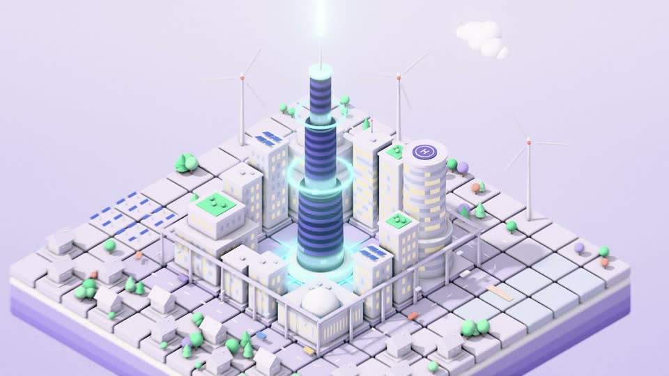
02 · 等轴 2.5D
Isometric 2.5D · ISOPOLIS「让城市自己生长」 · 1920×1080 · 30fps · 评审 8.00
看起来：粉彩棚拍色的等轴微缩城：地砖波浪翻落、楼房“长”出来、车流火车无人机数据流，最后拉远露出漂浮岛和贴在等轴平面上的标题。
什么时候用：科技公司架构图、App 功能演示、智慧城市/数据中心类讲解。
关键参数：正交相机 35.264° 俯角 + 45° 方位；楼房=底面落位→立面 scaleY 0→1 带 overshoot→顶面晚 2–3 帧；运镜只平移不旋转，视差 1:0.8:0.6。
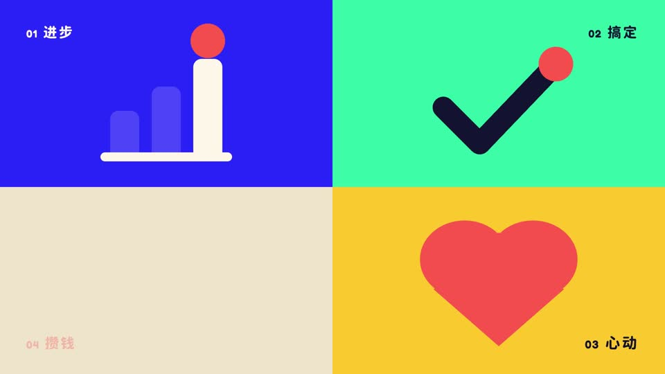
03 · 扁平矢量动画
Flat Vector · popwise「One Dot」 · 1920×1080 · 30fps · 评审 7.64
看起来：一镜到底的扁平世界：一个圆点弹跳落地变太阳，城市逐栋弹出，推进窗户里的几何小人，通知气泡色块擦除，最后收成 popwise 标志。
什么时候用：MG 基本盘：SaaS 产品宣传、科普解说、企业年报、App explainer。
关键参数：弹性缓动 cubic-bezier(0.34,1.56,0.64,1)；入场“预备-冲出-回弹”；错峰 2–4 帧、同一时刻只动一个主体；约 10% squash&stretch；严格无渐变 5–6 色。
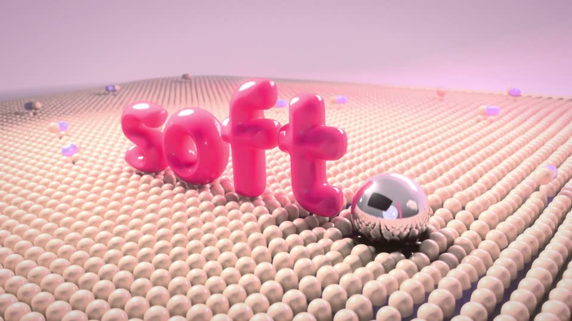
05 · 3D 渲染系（C4D/Blender 质感）
3D Render · soft.「柔软着陆」 · 1920×1080 · 24fps · 评审 7.71
看起来：粉彩无缝棚：光滑胶囊阵列被效果器波浪掀动，充气字母 “SOFT” 掉下来果冻般回弹、撞开阵列；软胶 SSS、亮面塑料、磨砂玻璃三种材质。
什么时候用：高端产品片（手机、饮料、球鞋）、品牌 ident、“解压满足感”内容。
关键参数：Blender Cycles + OIDN；24fps + 浅景深 f/1.8 感 + 真运动模糊；长尾 ease（前 20% 走完 80%）；SSS + AO + HDRI；阻尼弹簧挤压回弹。
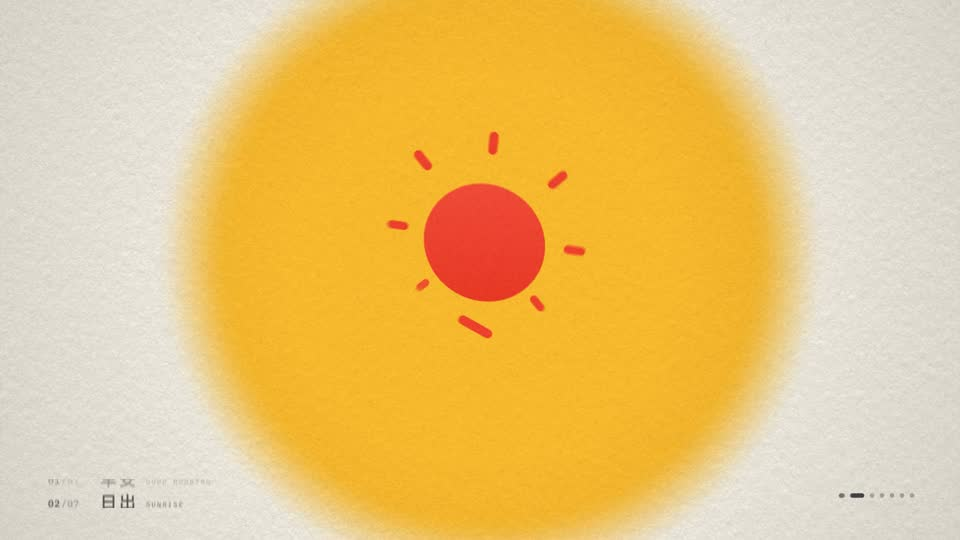
06 · 形变动画
Shape Morph · morphe.「一形万象」 · 1920×1080 · 30fps · 评审 7.64
看起来：一个主形状踩着节拍连续变身：咖啡杯→圆→太阳→海上落日→海鸥→纸飞机→定位钉→爱心→ morphe 品牌标，背景色块随之擦换。
什么时候用：图形叙事、发布会动效、高端 explainer 里“把概念串起来”的段落。
关键参数：顶点数一致、首顶点对齐防打结；复杂 A→B 先收成圆/胶囊再展开（各 8–12 帧）；叠加 10–15% 挤压拉伸与轻旋转；曲线 cubic-bezier(0.7,0,0.3,1)、首尾各 3 帧缓冲。
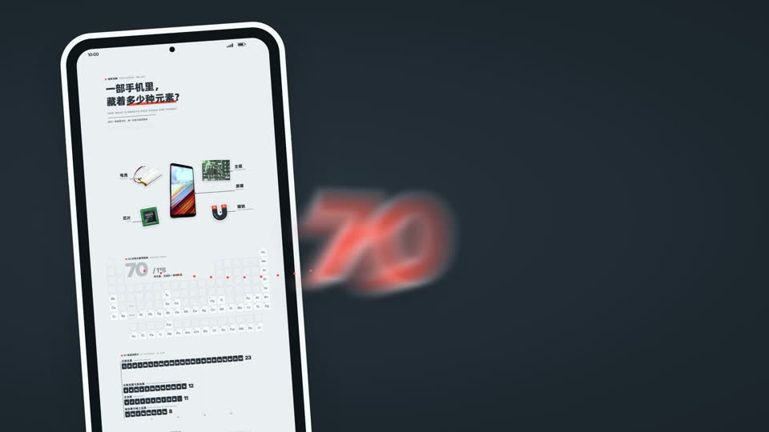
07 · 粗描边贴纸人科普 MG（回形针式）
Sticker Explainer · 一部手机里，藏着多少种元素？ · 1920×1080 · 30fps · 评审 7.71
看起来：蓝灰大画布一镜串起：白描边手机贴纸→爆炸图零件引线标注→元素周期表点亮→柱状图计数到 70+→世界地图供应链路线→回形针式大字标题卡。
什么时候用：硬核科普、财经知识区、企业宣传片——信息密度高、要“严肃感”的讲解。
关键参数：照片抠图统一加 8–12px 白描边；超大画布（如 6000×3000）+ 长 ease 相机；每拍必有新视觉元素；图表按比例精确；2–3 色 + 一个强调色、等线字体。
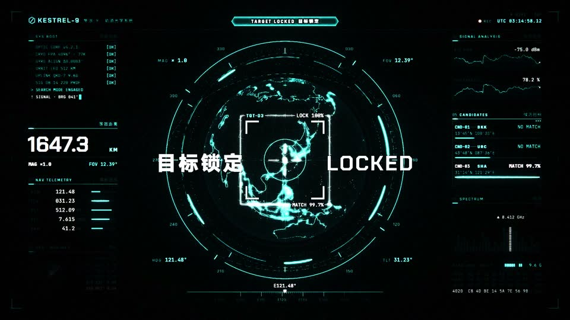
08 · 赛博朋克 HUD / FUI
Cyberpunk HUD · 隼眼-9 · 目标锁定 · 1920×1080 · 30fps · 评审 7.93
看起来：深青黑底青色线框层层展开：六边形网格、旋转刻度环、雷达扫描、滚动数据列、全息线框地球；找到目标后锁定框收缩吸附，全屏翻成警报橙“目标锁定”。
什么时候用：科技数码测评、游戏剪辑、军事航天科普、AI 产品演示里的“科技感”皮肤。
关键参数：线框按层级错帧 stroke 描绘；数字乱跳 3–5 帧后落定真值；锁定框 scale 1.4→1.0 快出缓入；青 #00E5FF / 橙 #FF6A00；辉光 + 轻色差 + 扫描线。
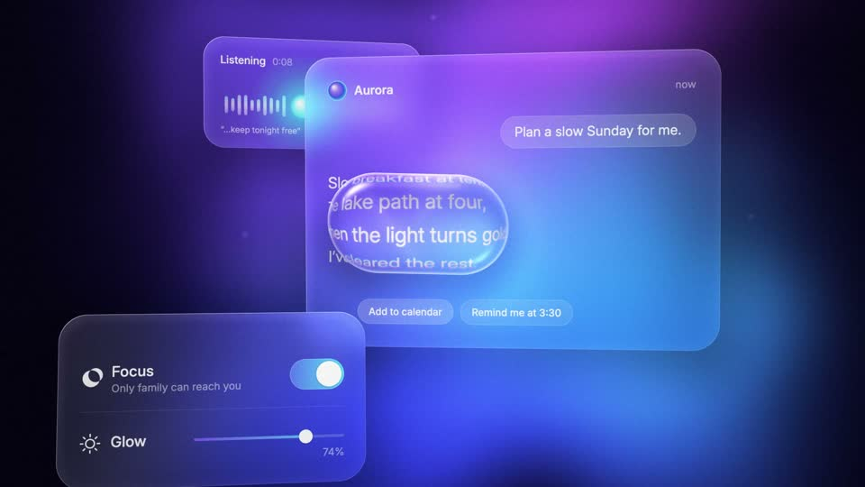
10 · 弥散渐变 / 玻璃拟态
Aurora & Glassmorphism · Aurora「思考，自有光」 · 1920×1080 · 30fps · 评审 8.07
看起来：深靛黑底上 4–5 团邻近色极光缓慢漂移，磨砂玻璃卡片带视差浮入，一枚液态玻璃透镜划过、折射放大极光与卡片，标题“思考，自有光”。
什么时候用：2024–26 AI 产品发布、科技品牌片默认视觉——“慢、透、高级”。
关键参数：光斑 blur 80–150px 沿贝塞尔漂移；玻璃=backdrop blur 20–40px + 5–10% 白填充 + 1px 30% 白内描边 + 大圆角；3–5% 噪点防色带；只用 sine/呼吸缓动，文字仅 opacity + 8px。
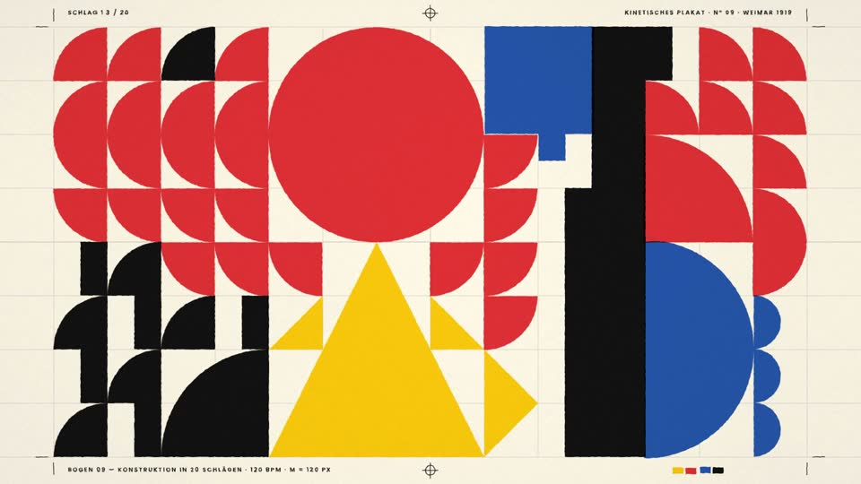
11 · 几何构成 / 包豪斯
Geometric Bauhaus · 二十拍构成 KONSTRUKTION · 1920×1080 · 30fps · 评审 7.71
看起来：奶油纸上红黄蓝黑的圆、半圆、三角、方块，在严格网格上一拍一个动作地翻转滑动，拼成康定斯基式海报，最后竖排 BAUHAUS 定格。
什么时候用：动态海报（kinetic poster）、音乐卡点、设计/艺术机构的品牌片。
关键参数：位移=网格模数整数倍、落点必在网格线；120 BPM 每拍一动；禁 overshoot（power2.inOut 或匀速）；旋转轴在自身中心/顶点/画面中心之间交替。
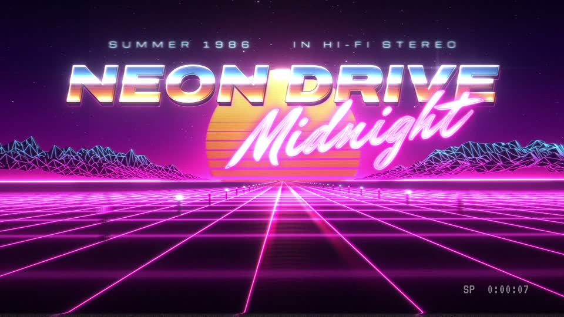
12 · 复古 80s Synthwave / VHS
80s Synthwave · NEON DRIVE「霓虹夜驰 1986」 · 1920×1080 · 30fps · 评审 8.21
看起来：VHS 噪点和 PLAY▶ 开场，低空飞过品红/青霓虹透视网格，条纹落日升起，镀铬字 NEON DRIVE 带镜头光晕砸入，粉色霓虹手写 Midnight 闪烁点亮。
什么时候用：音乐视频、复古潮流品牌、游戏/电竞片头、年代感栏目包装。
关键参数：三件套：透视网格滚动 + 多层渐变落日 + 双层辉光（紧 4px + 散 30px）；VHS 链：RGB 偏移 1–2px → 2px 扫描线 → 抖动 glitch；镀铬字多段金属渐变 + bevel + 星光扫过。
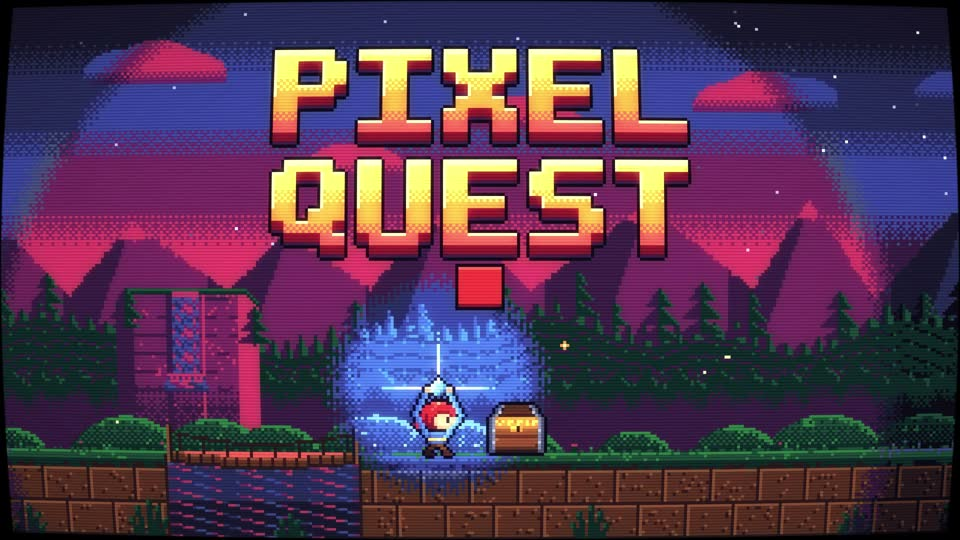
13 · 像素风
Pixel Art · PIXEL QUEST 像素冒险 · 1920×1080 · 30fps · 评审 8.07
看起来：320×180 横版卷轴：小勇士奔跑跳跃吃金币、踩史莱姆，调色板从白天轮换到黄昏，宝箱开光，像素中文对话框“欢迎来到像素世界！”，PIXEL QUEST 大字掉落。
什么时候用：游戏区内容、8-bit 音乐 MV、品牌怀旧营销。
关键参数：内部 320×180、×6 最近邻整数放大；PICO-8 式 16–32 色 + dithering；精灵 16–24px、跑步 6–8 帧约 10–12fps；整像素视差；精灵不许平滑缓动（steps）。
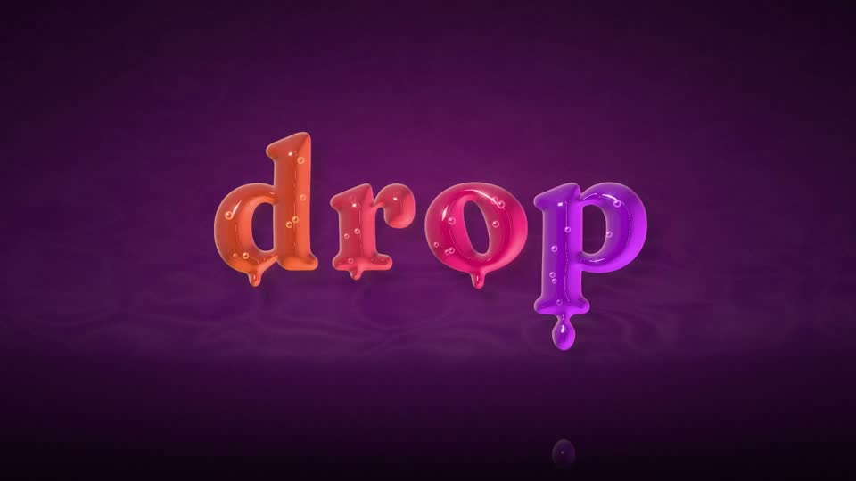
14 · 液态流动
Liquid Motion · drop.「万物始于一滴」 · 1920×1080 · 30fps · 评审 7.57
看起来：深梅色底上橙→粉→紫的光亮糖浆液滴落下溅开、融球拉丝断裂回弹，一道液浪漫过画面转场，聚成字标 drop.，最后一滴落下荡开涟漪。
什么时候用：音乐视频、食品饮料广告、转场包装，要有机、解压、高能量的时候。
关键参数：SDF 融球 smooth-min + 场梯度法线假 3D 光照；拉丝-断裂-两端回弹 2–3 帧；次级液滴晚 2–3 帧；液浪前沿 3–5 个错相位凸起；缓动 cubic-bezier(0.22,1,0.36,1)。
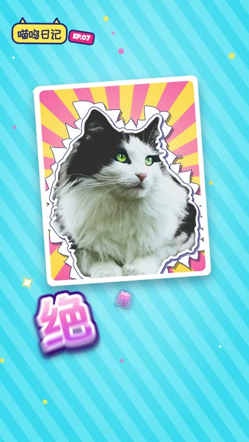
15 · 综艺花字（9:16 竖屏）
Variety Captions · 喵呜日记 EP.07 · 1080×1920 · 30fps · 评审 7.64
看起来：萌宠 vlog 竖屏：猫咪照片做 Ken Burns + 手持晃动 + 卡点推近，“今日份快乐”“？？？”“震惊!!”爆炸框“（小声）”“绝绝子”和“猫主子认证”印章依次弹出。
什么时候用：vlog、萌宠、访谈、搞笑二创、短视频平台竖屏包装。
关键参数：字体三层：填充 + 粗白描边 + 彩色外描边/投影；pop 0→1.15→1.0 约 8 帧、逐字错 2 帧；比笑点/音效晚 2–3 帧出现；驻留时轻微 wiggle；情绪配符号（汗滴/放射线/爆炸框）。
怎么安装 / 怎么用
只想用提示词做一支自己的片子（最省事）：
- 在空文件夹里打开能写代码、能跑命令的 AI 助手（如 Claude Code）；本机装好 Node、Chrome、ffmpeg（3D 风格另需 Blender）。
- 打开 prompts/ 里任意一份，把「提示词」代码块整段发过去。
- 只改
Creative seed（故事、品牌名、文案、配色）和Output（比如改竖屏 1080×1920）；保留Signature features。 - 成片后另开 AI 用 rubric 评审提示词 打分，把意见贴回去改一轮；原片改了两轮。
- 想省事可以让 AI 直接复用
harness/render.mjs（渲染）和lib/audio（mgaudio 配乐工具包）。
想跑原片源码：
git clone https://github.com/Vincentwei1021/mg-styles-15.git && cd mg-styles-15
npm install # Node ≥ 22.12：three / d3 / puppeteer-core / opentype.js …
pip install -r requirements.txt # Python ≥ 3.11：numpy / scipy / pedalboard / pyloudnorm …
python3 demos/01-flat-vector/audio.py # 配乐 → out/audio.wav
node harness/render.mjs demos/01-flat-vector # 逐帧渲染 → out/video.mp4（非 macOS 设 MG_CHROME=<Chrome 路径>）
python3 -m http.server 8000 # 预览 /harness/preview.html?demo=01-flat-vector注意：须从仓库根目录起服务；字体不在仓库里，按 assets/fonts/README.md 自备（阿里巴巴普惠体、抖音美好体、Fusion Pixel、站酷快乐体、Anton、Bebas Neue、VT323 等），否则字形会与成片不同；3D 那支步骤见 demos/04-3d-render/README.md（sim.py → scene.py → render.py → audio.py → 合成）。
对我们的启发
- 风格包的最小单位是“四段 + 可检验特征”：把通用工艺规则抽成固定骨架，风格只写四段；“特征”必须写成能被评审对照的参数（如 overshoot 用 cubic-bezier(0.34,1.56,0.64,1)、错峰 2–4 帧），这比堆形容词稳定得多。做自己的风格库时可直接套 template.md。
- 先节拍表、后画面与声音：
cues.json一张表同时驱动画面和audio.py，卡点从结构上保证，而不是后期对齐。 - 确定性是工程底线：
renderAt(t)+ 种子随机 + 预计算物理，让逐帧渲染、复现、AI 自检截帧都成为可能——这也是“代码即影片”能批量化的前提。 - 评审与制作分离：rubric 要求“没做这支片的评委”、抽联系表看细节、给带时间码和数字的修改，且至少一条提升惊艳度；两轮就能从 6 分档拉到 8 分档，可直接搬进我们的视频流水线。
- 中文场景是一等公民：综艺花字、回形针式科普、像素中文对话框都在列，提示词里明确要求地道中文与标点、无豆腐块——做中文内容的风格库可以从这 15 种起步再扩。
- 素材合规写进提示词：只用 CC0/OFL/可商用素材、写 CREDITS.md、品牌名虚构；仓库自身也把第三方许可（VCSL 采样、Natural Earth、OFL 字形）逐项说明。
提示词全译
每份 prompts/*.md 的结构相同：开头是原片信息与「怎么用」四步（原文即中文，见上文“怎么用”），然后是一整段英文提示词。下面先给出 15 份共用的通用骨架中译，再逐一给出每种风格的专属段中译（Style / Output / 技术路线 / 创意种子；「风格特征与关键技法」原文即中文，照录）。拼起来即是每份提示词的完整中文版。
通用骨架（15 份相同部分）
你是一支 10 秒动态设计短片的导演、动效设计师、工程师和声音设计师（只做这一支）。 目标是这种风格最经典、同时最惊艳的形态——入围奖项 / 高端商业片的水准。干净但看起来像模板的结果算失败。对标：Buck、ManvsMachine、Ordinary Folk、Giant Ant、Territory Studio、苹果发布会动效、Pentagram 动态识别、Behance/Motionographer 顶级专题、抖音/B站头部设计账号。 # Style（风格） <中文风格名 英文风格名> # Output (fixed)（输出规格，固定） - 1920×1080（竖屏那支为 1080×1920），24 或 30 fps，正好 10.000 秒（240/300 帧），H.264 MP4 + 立体声 AAC 音频（48 kHz），整体响度母带到 −14 LUFS，真峰值 ≤ −1 dBTP。最终文件：video.mp4。 # Suggested technical route（建议技术路线） <见各风格> （如果另一条路线明显能提高质量，你可以换，但要说明理由。） # Creative seed（创意种子） <见各风格> 你是导演：如果你有更强的点子，可以改概念、文案、故事节拍和品牌名，但结果必须仍是这种风格公认的、一眼能认出的经典形态，并命中下面的风格特征。 # Signature features and key techniques（风格特征与关键技法——按这些评判） <见各风格，原文即中文> # How to work（工作方法） 1. 创意方案（Treatment）。写下一个清晰的点子：前 0.5 秒有钩子（开头空白或黑场绝不超过 0.3 秒），一段升级，在全片约 60–75% 处有一个毫无疑问的高光时刻，结尾一个构图完整的画面定格约 0.8–1.2 秒、带有活的微动。把上面每一条风格特征对应到某个时刻。维护一张节拍表（节拍与命中时间），画面和声音都从这张表读取。 2. 先关键帧，后运动。先把质感做出来，在 6–10 个关键时间点渲染静帧，并真的去看。每张静帧都应能当海报：构图、层级、留白、排字到位（字距、行高、字重对比、中文标点、约 5% 安全边距）。反复迭代，直到没有任何东西看起来是默认值、平庸、拥挤或“AI 模板感”。 3. 运动。搭编排，低分辨率预览。把最快的动作逐帧过一遍：间距、缓动、弧线、重叠、预备与跟随、运动模糊。没有无意的死区；能量跟着音乐走。 4. 声音。写类型正确的音乐和声音设计，锁定到节拍表。检查画面命中点落在音频起音上。按输出规格做母带。 5. 终版。全分辨率渲染（合适处加运动模糊），然后检查：正好 10.00 秒、分辨率、帧率、有音频且响度正确、无黑帧、无回退字体或豆腐块、画面边缘无元素被裁、细线不闪烁、渐变无色带。修好再重复，直到你愿意拿去投电影节。 6. 写一份诚实的自评：最强的是什么，最弱的是什么，多给时间你会做什么。 # Rules（规则） - 渲染必须是确定性的：每一帧都是时间 t 的纯函数。只用带种子的随机数；物理和粒子预先计算或用解析解；不用实时时钟；不用状态触发的 CSS 过渡。一条可靠路线：一个可以按需画出任意时刻 t 的网页，用无头浏览器逐帧截取，再用 ffmpeg 编码（或者用 Blender 脚本渲染 PNG 序列）。 - 素材：只用 CC0 / 公有领域 / OFL / Apache / 允许免费商用的。在 CREDITS.md 里记录每个来源和许可。不用真实品牌商标；品牌名自己编。 - 画面文字必须正确、自然：地道的中文、正确的中文标点、无错别字。 # Craft checklist（工艺清单——评委看什么） - 风格真实性：专家一秒就能叫出风格名；每条标志技法都在，且执行正确。 - 动效工艺：有目的的缓动（除非设计上就是机械运动，否则不用线性）、重叠与错峰、预备与跟随、弧线、风格允许时的挤压拉伸、一致的物理、合适处的运动模糊；转场由元素带动，而不是淡入淡出。 - 节奏：命中点锁定音乐；忙与静有对比；不单调。 - 设计：强构图、网格、字体层级、受控色板；质感与收尾（颗粒、辉光、暗角）只在风格需要处使用；没有任何东西看起来是偶然的。 - 技术打磨：无抖动（除非有意）、无跳变、无锯齿、无色带、无回退字体、无半加载的图片。 - 声音：类型正确、有音乐性、同步、做过母带。 # Before you deliver, score yourself honestly（交付前诚实自评） 在风格还原度、概念惊艳度、动效工艺、设计与排字、收尾与质感、声音与同步、技术这几项上打 1–10 分（6 = 模板水平，8 = 高端代理商水平，9 = 入围奖项）。目标 9 分；先修最低分的那项。 # Deliver（交付） video.mp4，外加一份简短报告：两句话讲清概念；带时间码的节拍表；每条风格特征如何实现；技术路线；检查数据（时长、分辨率、帧率、响度、真峰值）；你诚实认为的三大弱点。
01 · 逐帧手绘 / 线条沸腾 Cel Animation / Frame-by-Frame & Line Boil
这支片怎么做的（展示页说明）：Canvas 2D 自制笔刷引擎（js/engine.js），每两帧重画一次线条，纸张底纹由 tools/ 生成。
Style：逐帧手绘 / 线条沸腾 Cel Animation / Frame-by-Frame & Line Boil
Output（固定）：1920×1080，24 fps，正好 10.000 秒（240 帧），H.264 MP4 + 立体声 AAC（48 kHz），整体响度 −14 LUFS，真峰值 ≤ −1 dBTP。最终文件 video.mp4。
建议技术路线：HTML Canvas2D：自写变宽笔刷渲染器（中心线 + 压感 → 轮廓多边形），boil 用 3–4 套抖动变体每 2 帧轮换；纸张纹理正片叠底。（如另一条路线明显更好可以换，但要说明理由。）
创意种子（Creative seed）：
「手作魔法」逐帧手绘的魔法感，Buck / Giant Ant 式混合（干净图形 + 手绘 cel 特效），24fps 一拍二。
- 暖色纸张底；墨线会 BOIL（每 2 帧带轻微差异重画一次）；填色略微错位，像手工上色。
- 故事：一根火柴擦燃（SMEAR 拖影帧，快动作一拍一）→ 一个火苗精灵跳出来，预备 + 挤压，跳舞（一拍二）→ 炸成 cel 特效：卷曲的烟团、火星、星爆、速度线 → 特效重新聚成手写标题（如 “HAND MADE” 或「手作」），在 1 秒定格里持续 boil（定格用一拍三）。
- 3–4 色色板：墨黑、番茄红、阳光黄、奶油纸色；纸纹正片叠底 10–15%。
声音：俏皮爵士风拨弦/木琴铺底 + 卡通音效：擦燃、呼的一声、啵、噗、闪光——卡到帧。
风格特征与关键技法（Signature features，原文即中文）：
手绘逐帧或在矢量动画上叠加逐帧质感，标志性特征是 line boil——线条每隔几帧轻微抖动，仿佛画面在'呼吸'。Giant Ant、Buck 等工作室大量使用 cel 元素（烟、水花、速度线）点缀主动画，反数字精致感的核心手段。
视觉特征：线条持续微抖(boil), 一拍二/一拍三节奏, smear拖影帧, 手绘烟火水花点缀, 纸纹底
关键技法：
- 打帧节奏：24fps 下'一拍二'（实际12fps）为主，快动作切'一拍一'，静止镜头'一拍三'
- line boil 伪造法：AE 用 Turbulent Displace（数量2~5、大小50）+ 每 2 帧随机化 evolution + Posterize Time 12fps；真 boil 则画 3~4 张微差线稿循环
- smear frame：快速位移的中间帧把物体拉长 150%~300% 只保留 1 帧
- cel FX 点缀层：烟/水花/闪电用纯手绘逐帧叠在矢量主体上（Buck 式 hybrid）
- 整体叠纸纹（multiply 10~15%）统一手作气质
英文原文：技术路线 + 创意种子（可直接复制替换）
HTML Canvas2D: custom variable-width brush renderer (centreline + pressure → outline polygon), boil = 3–4 jitter variants cycled every 2 frames; paper texture multiply (You may choose a better route if it clearly raises quality; say why.) 「手作魔法」Hand-made frame-by-frame magic, Buck/Giant-Ant hybrid (clean shapes + hand-drawn cel FX), animated on 2s at 24 fps. - Warm paper ground; ink linework that BOILS (lines redrawn with slight variation every 2 frames); fills slightly off-register like hand colouring. - Story: a matchstick strikes (SMEAR frame, on 1s for the fast action) → a flame spirit character jumps out, anticipation + squash, dances (on 2s) → it bursts into cel FX: smoke puffs curling, sparks, star bursts, speed lines → the FX re-form into hand-lettered title (e.g. "HAND MADE" or 手作) that keeps boiling on a 1s hold (on 3s for the hold). - Palette 3–4 colours: ink black, tomato red, sunny yellow, cream paper; paper grain multiply 10–15%. Sound: playful jazzy pizzicato/xylophone bed + cartoon SFX: strike, fwoosh, pop, poof, sparkle — synced to the frame.
02 · 等轴 2.5D Isometric / 2.5D
这支片怎么做的（展示页说明）：Three.js 正交相机搭的等轴场景，所有模型和材质都在 js/ 里用代码生成。
Style：等轴 2.5D Isometric / 2.5D
Output（固定）：1920×1080，30 fps，正好 10.000 秒（300 帧），H.264 MP4 + 立体声 AAC（48 kHz），整体响度 −14 LUFS，真峰值 ≤ −1 dBTP。最终文件 video.mp4。
建议技术路线：HTML：Three.js 正交相机（OrthographicCamera）摆真等轴角度 + 软阴影 + AO（three/addons 后期），或用 SVG 以 SSR 矩阵造面。（如另一条路线明显更好可以换，但要说明理由。）
创意种子（Creative seed）：
「微缩智慧城」一座会自己搭起来的等轴微缩城市 / 数据园区——School of Motion 式等轴 MG 炫技片。
- 真等轴相机（正交，俯角 35.264°，方位 45°），无透视；粉彩棚拍色板（薰衣草紫地面、薄荷绿、蜜桃、天蓝、白），软阴影 + 环境光遮蔽，看起来像 Dribbble/Behance 首页大图。
- 0–2 秒：地砖从中心以波浪形翻转/落下（每块一个小回弹）；
- 2–5 秒：楼房生长——底座落位，墙面 scaleY 从 0 拉起带 overshoot，屋顶晚 2–3 帧盖上；树木弹出；窗户依次亮起；
- 5–8 秒：生活感——汽车沿道路循环、一列小火车、无人机运包裹、发光数据流在楼宇间脉动、风车转动；镜头做平行滑移（不旋转），视差层速度 1 : 0.8 : 0.6（前景有云）；
- 8–10 秒：拉远，露出整座岛漂浮在粉彩虚空中；标题卡贴在等轴平面上（文字斜切进等轴空间），如 “SMART CITY OS”。
声音：明亮的拨弦科技旋律（FM 马林巴/拨弦），每块地砖/楼房落地配轻柔的咔哒/啵，拉远时一声通透的 whoosh。
风格特征与关键技法（Signature features，原文即中文）：
以 30° 等轴测投影展示微缩世界：小城市、办公室切片、数据机房，无灭点、处处等比。信息密度高又不失可爱，是科技公司架构图动画和 App 功能演示的标配。School of Motion 有专门的 isometric mograph 教程系列。
视觉特征：30°等角投影, 无透视灭点, 微缩场景, 楼房生长动画, 平行滑轨式运镜
关键技法：
- SSR 公式造等轴面：Scale 纵向 86.6% → Shear/skew ±30° → Rotate ∓30°，三个面分别做后拼合
- 假 3D 靠图层排序：Z 序=画面 y 坐标，物体沿等轴网格移动时保持 2:1 像素斜率
- 楼房'生长'：底面先落位，立面用 scaleY 从 0 拉起 + 顶面延迟 2~3 帧盖上
- 运镜是整组平移（无旋转），配合前中后景 1:0.8:0.6 的视差速度
- AE 里可用真 3D 图层+正交相机（无透视）偷懒，Motion Design School 的 Isometric Camera 技巧即此路
英文原文：技术路线 + 创意种子（可直接复制替换）
HTML: Three.js OrthographicCamera at true isometric angle + soft shadows + AO (three/addons postprocessing), or SVG with SSR matrix faces (You may choose a better route if it clearly raises quality; say why.) 「微缩智慧城」An isometric miniature city / data campus that builds itself — the School-of-Motion isometric mograph showpiece. - True isometric camera (orthographic, 35.264° elevation, 45° azimuth), no perspective, pastel studio palette (lavender ground, mint, peach, sky blue, white) with soft shadows + ambient occlusion so it reads like a premium Dribbble/Behance hero. - 0–2s: ground tiles flip/drop in as a wave from the centre (tiny bounce each); - 2–5s: buildings GROW — base lands, walls scaleY from 0 with overshoot, roof caps 2–3 frames later; trees pop; windows light up in sequence; - 5–8s: life — cars loop along roads, a little train, drones carrying packets, glowing data streams pulse between buildings, a wind turbine spins; camera does parallel slides (no rotation) with 1 : 0.8 : 0.6 parallax layers (foreground clouds); - 8–10s: pull back to reveal the whole island floating in a pastel void; title card set ON the isometric plane (text skewed into iso space) e.g. "SMART CITY OS". Sound: bright plucky tech melody (FM marimba/pluck), soft clicks/pops for every tile/building landing, airy whoosh on the pull-back.
03 · 扁平矢量动画 Flat / Vector 2D Motion Graphics
这支片怎么做的（展示页说明）：一个 HTML 页面，SVG 图形 + 手写缓动，按时间逐帧画出。
Style：扁平矢量动画 Flat / Vector 2D Motion Graphics
Output（固定）：1920×1080，30 fps，正好 10.000 秒（300 帧），H.264 MP4 + 立体声 AAC（48 kHz），整体响度 −14 LUFS，真峰值 ≤ −1 dBTP。最终文件 video.mp4。
建议技术路线：HTML：SVG + GSAP（CustomEase / CustomBounce / MorphSVG）；快速位移加 motion blur（mb=4）。（如另一条路线明显更好可以换，但要说明理由。）
创意种子（Creative seed）：
「一镜到底的扁平世界」一镜到底的品牌解说片，Motion Ocean / Google explainer 的经典形态，做到 showreel 级打磨。
- 0.0–1.2 秒 钩子：空的大色块底；一个饱和色圆点落下，三段式“预备 → 拉伸 → 挤压 → 过冲 → 落定”。一眼看得出功力。
- 1.2–3.0 秒：圆点变成太阳；扁平城市逐栋弹出，错峰 2–4 帧（每栋各带小过冲），云滑过，鸟扇翅。
- 3.0–5.5 秒：镜头推进一扇窗 → 桌前的几何化人物（锚点旋转的四肢 rig、点头、眨眼）做出反应；手机响了。
- 5.5–8.0 秒：通知气泡扩张填满画面，作为色块擦除（SHAPE WIPE）转场；里面图标按编排的节奏迸出（柱状图生长、对勾画出、爱心弹出、硬币翻转）。
- 8.0–10.0 秒：元素驱动转场——一切收拢/飞入一个虚构品牌（如 “Popwise”）的 logo 组合 + 标语，弹性落定，1 秒定格保留微动。
规则：同一时刻只让一个主体动；squash&stretch 约 10%；次级动作与跟随；元素驱动转场（一个物体飞出并带动切换）；严格扁平（无渐变），大胆的 5–6 色色板（如群青 #2B2BFF、珊瑚 #FF5A4E、向日葵黄 #FFC62B、薄荷 #2EE6A8、奶油 #FFF6E9、墨色 #151433）。
声音：轻快 future bass / 流行，约 120 BPM；每次入场配 pop/boing/whoosh，卡到帧。
风格特征与关键技法（Signature features，原文即中文）：
MG 动画最主流的基本盘风格，源自 Google Material/企业解释视频（explainer）传统。纯色几何化的人物与场景、无描边或极简描边、大色块撞色，一切元素都是矢量形状。常见于 SaaS 产品宣传、科普解说、企业年报视频。
视觉特征：纯色大色块, 几何化角色, 无渐变或极少渐变, 干净留白, 高饱和品牌色板, 元素弹性入退场
关键技法：
- AE Shape Layer + 父子级 null 控制层级，人物四肢用锚点旋转做 rig
- 弹性缓动是灵魂：overshoot 用 cubic-bezier(0.34,1.56,0.64,1) 或 AE 里 70~85% influence 的贝塞尔手柄；入场'预备-冲出-回弹'三段式
- 元素错峰入场（stagger 2~4 帧），同一时刻只让一个主体动
- 30fps 居多；位移动画带 10% 左右 squash&stretch 增加弹性
- 转场常用色块擦除（shape wipe）或元素飞出带动整场切换
英文原文：技术路线 + 创意种子（可直接复制替换）
HTML: SVG + GSAP (CustomEase/CustomBounce/MorphSVG); motion blur mb=4 for fast moves (You may choose a better route if it clearly raises quality; say why.) 「一镜到底的扁平世界」One-continuous-shot brand explainer, the canonical Motion-Ocean/Google-explainer form, pushed to showreel polish. - 0.0–1.2s HOOK: empty bold color field; a single saturated circle drops in with the three-phase anticipation → stretch → squash → overshoot → settle. Immediately readable craft. - 1.2–3.0s: the circle becomes the sun; a flat city pops up building-by-building with 2–4 frame stagger (each with its own mini overshoot), clouds slide, birds flap. - 3.0–5.5s: camera pushes into one window → a geometric character at a desk (limb rig with anchor rotations, head bob, blink) reacts; phone pings. - 5.5–8.0s: the notification bubble expands to fill the frame as a SHAPE WIPE transition; inside, icons burst in a choreographed rhythm (bar chart grows, check mark draws, heart pops, coin flips). - 8.0–10.0s: element-driven transition — everything collapses/flies into a logo lockup for an invented brand (e.g. "Popwise") + tagline, elastic settle, 1s hold with micro-motion. Rules: one hero moves at a time; squash&stretch ~10%; secondary action & follow-through; element-driven transitions (an object flies out and carries the cut); strictly flat (no gradients), bold 5–6 color palette (e.g. ultramarine #2B2BFF, coral #FF5A4E, sunflower #FFC62B, mint #2EE6A8, cream #FFF6E9, ink #151433). Sound: upbeat future-bass/pop ~120 BPM; pop/boing/whoosh on each entry, synced to the frame.
04 · 线条动画 Line Art / Line Animation
这支片怎么做的（展示页说明）：一条 SVG 路径贯穿全片，描边进度由 film.js 按时间计算。tools/ 里的脚本从路径算出转角和速度，给配乐卡点。
Style：线条动画 Line Art / Line Animation
Output（固定）：1920×1080，30 fps，正好 10.000 秒（300 帧），H.264 MP4 + 立体声 AAC（48 kHz），整体响度 −14 LUFS，真峰值 ≤ −1 dBTP。最终文件 video.mp4。
建议技术路线：HTML：SVG 路径 + stroke-dashoffset（getTotalLength）+ GSAP；一台跟随笔尖的虚拟相机。（如另一条路线明显更好可以换，但要说明理由。）
创意种子（Creative seed）：
「一笔画」为奢侈品/建筑品牌做的一笔画叙事——整支片子就是一条连续的线。
- 深午夜底色（#0B1320 或近黑）+ 唯一一条香槟金线（#E9D7A5），恒定约 3px，圆头，带柔光的笔尖引领描画。
- 故事（连续路径，每个图形的尾巴就是下一个的开头）：一颗种子 → 发芽成树苗 → 枝干变成建筑的结构线 → 建筑轮廓延伸成天际线/地平线 → 地平线抬起、绕成字母组合 logo → 线转面时刻（logo 从锚点开始填满金色）→ 细的大字距衬线字标（如 “ATELIER LINEA”）淡入。
- 描画速度在转角处缓入（cubic-bezier(0.65,0,0.35,1)）；虚拟相机漂移/推进以让笔尖始终在画内，结尾拉远，把整幅画作为海报构图呈现；相机离开后旧线段暗到约 35%。
声音：极简毛毡钢琴 + 柔和弦乐渐强；笔在纸上的沙沙声，响度跟随笔尖速度；填色时一声精致的钟音。
风格特征与关键技法（Signature features，原文即中文）：
以单色细线为唯一造型语言，线条自我描绘（draw-on）、延伸、转折并变形为下一个图形，一笔连成整支片子。极简高级感强，常见于奢侈品、金融、建筑类品牌片和 logo 动画。
视觉特征：等宽细线, 单色或双色, 大量负空间, 线条连续生长, 线面转换瞬间
关键技法：
- 核心是 stroke 描绘：AE 用 Trim Paths 0→100%，Web 端用 SVG stroke-dasharray/dashoffset
- 线宽全片恒定（2~4px），转角处让描绘速度略减速，用 easeInOut cubic-bezier(0.65,0,0.35,1)
- '一笔画'叙事：上一图形的尾线即下一图形的起线，路径提前在 Illustrator 里连好
- 线转面：描完轮廓后用同路径的 fill 从锚点扩展填充
- 配合微小的端点圆头（round cap）与路径抖动可增加手绘感
英文原文：技术路线 + 创意种子（可直接复制替换）
HTML: SVG paths + stroke-dashoffset (getTotalLength) + GSAP; a virtual camera that follows the pen tip (You may choose a better route if it clearly raises quality; say why.) 「一笔画」One-line narrative for a luxury / architecture brand — the whole film is ONE continuous line. - Deep midnight ground (#0B1320 or near-black) + a single champagne-gold line (#E9D7A5), constant ~3px, round caps, a softly glowing pen tip that leads the draw. - Story (continuous path, the tail of each figure is the start of the next): a seed → sprouts into a sapling → branches become the structural lines of a building → the building outline extends into a skyline/horizon → the horizon line lifts and loops into a monogram logo → LINE-TO-FILL moment (logo fills with gold from its anchor) → thin letter-spaced serif wordmark (e.g. "ATELIER LINEA") fades up. - Draw speed eases into corners (cubic-bezier(0.65,0,0.35,1)); the virtual camera drifts/pushes to keep the tip in frame, then dollies out at the end to reveal the whole drawing composed as a poster; older line segments dim to ~35% as the camera moves on. Sound: minimal felt piano + soft string swell; a pen-on-paper whisper whose loudness follows tip speed; delicate chime on the fill.
05 · 3D 渲染系（C4D/Blender 质感） 3D Render / CGI Motion Design
这支片怎么做的（展示页说明）：Blender Cycles 渲染：blender/sim.py 算出全部运动，scene.py 搭场景，render.py 出序列帧；index.html 再叠上文字和颗粒合成。序列帧体积大，没有收录。
Style：3D 渲染系（C4D/Blender 质感） 3D Render / CGI Motion Design
Output（固定）：1920×1080，24 fps，正好 10.000 秒（240 帧），H.264 MP4 + 立体声 AAC（48 kHz），整体响度 −14 LUFS，真峰值 ≤ −1 dBTP。最终文件 video.mp4。
建议技术路线：Blender 5.1.2 命令行（bpy 脚本 → Metal GPU 上的 Cycles + OIDN 降噪，若质量撑得住也可用 EEVEE）→ PNG 序列 → ffmpeg；可选用 HTML 叠加一层排字。（如另一条路线明显更好可以换，但要说明理由。）
创意种子（Creative seed）：
「Soft & Satisfying」C4D/Octane 粉彩产品 ident 质感（Maxon demo reel 那种味道）：软糖材质、克隆阵列、带物理感的运动。
- 粉彩影棚：无限远无缝背景、大面积柔光面光 + HDRI（见 /assets/hdri）、浅景深（f/1.8 感）、24fps、真实运动模糊。
- 一片 MoGraph 式克隆阵列（几何节点生成的光滑圆角胶囊/球体网格）随效果器波浪起伏；主角物体——充气/倒角的 3D 字标（如 “SOFT” 或虚构品牌）或一个亮面果冻 logo——掉落，挤压拉伸地果冻抖动（阻尼弹簧），撞进并挤开克隆阵列。
- 材质三件套：SSS 软糖（糖果粉/蜜桃）、亮面塑料（奶油/淡紫）、磨砂玻璃或镀铬点缀——带 AO、柔和反射、微弱的次表面辉光。
- 镜头：长尾缓动（前 20% 时间走完 80% 位移），收在干净的主角构图上定格约 1 秒。
声音：ASMR 式解压的软闷响、挤压声、气泡啵啵声、通透的电影感铺底；撞击声卡到帧。
风格特征与关键技法（Signature features，原文即中文）：
Cinema 4D + Redshift/Octane 或 Blender 渲染的实体质感动画：软胶、玻璃、金属、布料，配合克隆阵列和物理模拟。是高端产品片（手机、饮料、球鞋）和品牌 ident 的主流，Maxon 官方 Demo Reel 就是该风格的年度风向标。
视觉特征：PBR真实材质, 浅景深, 柔和棚拍布光, 克隆器阵列, 软体碰撞, 糖果色软胶质感
关键技法：
- MoGraph 核心：Cloner 克隆器 + Random/Plain Effector 做群体波浪式动画
- 质感三件套：SSS 次表面散射（软胶感）+ AO + HDRI 三点布光
- 运动多用长尾 ease：位移曲线前 20% 完成 80% 路程，收尾极慢，配 motion blur
- 24/25fps 电影帧率 + 浅景深（f/1.8 感）区别于 2D 系的 30fps 利落感
- 常见结构：产品为轴心，粒子/流体/布料围绕它做物理模拟编排
英文原文：技术路线 + 创意种子（可直接复制替换）
Blender 5.1.2 CLI (bpy script → Cycles on Metal GPU with OIDN denoise, or EEVEE if it holds quality) → PNG sequence → ffmpeg; optional HTML overlay pass for typography (You may choose a better route if it clearly raises quality; say why.) 「Soft & Satisfying」The C4D/Octane pastel product-ident look (Maxon demo-reel vibe): soft candy materials, cloner arrays, physics-feel motion. - Pastel studio: infinite cyc backdrop, big soft area lights + HDRI (see /assets/hdri), shallow DOF (f/1.8 feel), 24 fps, real motion blur. - A MoGraph-style cloner field (geometry-nodes grid of glossy rounded pills/spheres) ripples with an effector wave; a hero object — inflated/bevelled 3D wordmark (e.g. "SOFT" or an invented brand) or a glossy jelly logo — drops in, squash-and-stretch jiggle (damped spring), collides with and displaces the cloner field. - Material trio: SSS gummy (candy pink / peach), glossy plastic (cream / lilac), frosted glass or chrome accent — with AO, soft reflections, subtle subsurface glow. - Camera: long-tail ease (80% of the move in the first 20%), ends on a clean hero composition held ~1s. Sound: ASMR-satisfying soft thuds, squishes, bubbly pops, airy cinematic pad; hits frame-synced to impacts.
06 · 形变动画 Morphing / Shape Morph
这支片怎么做的（展示页说明）：SVG 形状逐点插值，字标轮廓由 tools/glyphs.py 从字体里提取成 glyphs.json。
Style：形变动画 Morphing / Shape Morph
Output（固定）：1920×1080，30 fps，正好 10.000 秒（300 帧），H.264 MP4 + 立体声 AAC（48 kHz），整体响度 −14 LUFS，真峰值 ≤ −1 dBTP。最终文件 video.mp4。
建议技术路线：HTML：SVG + flubber 或 GSAP MorphSVGPlugin（调 shapeIndex），色块擦除换底色。（如另一条路线明显更好可以换，但要说明理由。）
创意种子（Creative seed）：
「万物相连」苹果发布会级的形变链：一个主形状踩着节拍连续变成 6–8 个有意义的图标。
- 链条示例：咖啡杯 →（圆）→ 太阳 → 海上落日 → 海鸥 → 纸飞机 → 定位钉 → 爱心 → 带字标的虚构品牌 logo “morphe”。
- 每个 A→B 都经过一个简单中介形（圆/胶囊），伴随旋转和 10–15% 挤压拉伸；子部件同步形变（热气 → 太阳光芒 → 海浪）。
- 每次形变背景色块随之切换（干净的色块擦除）；缓动 cubic-bezier(0.7,0,0.3,1)，首尾各留 3 帧缓冲；绝不允许打结/缠绕（检查每次形变中点的静帧）。
声音：有节奏的拨弦琶音；每次形变一声有音高的 whoosh，落在拍点上。
风格特征与关键技法（Signature features，原文即中文）：
一个图形丝滑连续地变成另一个图形：手机变成地图钉、咖啡杯变成落日。是图形叙事（visual storytelling）的核心语法，苹果发布会动效和高端 explainer 里最见功力的部分。
视觉特征：轮廓连续过渡无跳变, 中介形状桥接, 形变伴随位移旋转, 变形瞬间的挤压拉伸
关键技法：
- 路径对齐是前提：两形状顶点数一致、首顶点方位对应（AE 里重设 first vertex），否则会打结
- 复杂 A→B 不直接变：先收敛为中介简形（圆/胶囊）再展开，'A→圆→B'两段各 8~12 帧
- 形变全程叠加 10~15% squash & stretch 与轻微旋转，掩盖插值的机械感
- 速度曲线中段最快 cubic-bezier(0.7,0,0.3,1)：起止各留 3 帧缓冲
- Web 端用 flubber/polymorph 库做最优顶点匹配插值，效果远好于朴素 SMIL
英文原文：技术路线 + 创意种子（可直接复制替换）
HTML: SVG + flubber or GSAP MorphSVGPlugin (tune shapeIndex), color-field wipes (You may choose a better route if it clearly raises quality; say why.) 「万物相连」Apple-keynote-grade morph chain: one hero shape continuously becomes 6–8 meaningful icons, on the beat. - Chain example: coffee cup → (circle) → sun → sunset over sea → gull → paper plane → location pin → heart → invented brand logo "morphe" with wordmark. - Every A→B goes through a simple intermediate (circle/capsule) with rotation and 10–15% squash&stretch; sub-parts morph in sync (steam → sun rays → waves). - Background color fields change with each morph (clean color-block wipes); ease cubic-bezier(0.7,0,0.3,1), 3-frame cushions at start/end; no knotting/tangling ever (check every morph mid-point stills). Sound: rhythmic plucky arpeggio; a pitched whoosh per morph landing on the beat.
07 · 粗描边贴纸人科普 MG（回形针/林超风格） Bold-outline Sticker Explainer MG (PaperClip / Lin Chao style)
这支片怎么做的（展示页说明）：一张超大画布配相机运镜，图表用 D3 + TopoJSON 画，贴纸由 tools/stickers.py 抠图描边。
Style：粗描边贴纸人科普 MG（回形针/林超风格） Bold-outline Sticker Explainer MG (PaperClip / Lin Chao style)
Output（固定）：1920×1080，30 fps，正好 10.000 秒（300 帧），H.264 MP4 + 立体声 AAC（48 kHz），整体响度 −14 LUFS，真峰值 ≤ −1 dBTP。最终文件 video.mp4。
建议技术路线：HTML：一张超大画布（如 6000×3000 px）配相机变换（长缓动），SVG 图表，照片贴纸加 10px 白描边。（如另一条路线明显更好可以换，但要说明理由。）
创意种子（Creative seed）：
「回形针式硬核科普」回形针 PaperClip 式知识视频质感：贴纸化照片 + 扁平图标 + 精确图表铺在巨型画布上，镜头连续运动。
- 选题（自己写紧凑的文案），如「一部手机里，藏着多少种元素？」。
- 冷静的蓝灰/米白画布（#E9EEF2 + 石板灰），2–3 色 + 一个强调色（如 #FF5A36）；字重均匀的无衬线字体，严格对齐。
- 一条连续镜头路径：贴纸化手机照片（10px 白描边、柔和投影）→ 爆炸图零件贴纸 + 引线标签 → 元素周期表网格中元素格依次点亮 → 柱状图生长并计数到 “70+” → 世界地图上画出供应路线 → 拉远到回形针式粗体排字标题卡（粗无衬线、巨大数字、小字说明）。
- 每一拍都引入一个新的视觉元素；图表精确（柱高按比例、数字前后一致）。
声音：干净的科技解说铺底、UI 点击声、计数时的嘀嗒声、镜头移动时轻柔的 whoosh。
风格特征与关键技法（Signature features，原文即中文）：
回形针 PaperClip 带火的知识区标准包装：实拍图片抠图后加粗白描边变成『贴纸』，与扁平图标、数据图表一起铺在大画布上，镜头平移缩放串联信息点；林超等财经/跨学科 UP 主将其与手写板书、公式卡片结合。至今仍是硬核科普、财经知识区、企业宣传片的主流范式。
视觉特征：照片贴纸化（粗白描边）, 蓝灰/米白冷静底色, 扁平图标+精确数据图表, 大画布镜头平移缩放, 信息密度极高的节拍化叙事
关键技法：
- 素材照片抠图 + 8~12px 白描边统一质感，消除图片来源差异
- 超宽大画布布局，摄像机层做平移/缩放（ease 长曲线），一镜串多个信息点
- 图表动效：柱状图生长、数字滚动计数、路径描边生长
- 解说词逐句驱动画面元素入场，语速快、每句必有新视觉元素
- 克制配色（2~3 色）+ 等线字体，保持『严肃感』
英文原文：技术路线 + 创意种子（可直接复制替换）
HTML: one huge canvas (e.g. 6000×3000 px) with a camera transform (long eases), SVG charts, photo stickers with 10px white outline (You may choose a better route if it clearly raises quality; say why.) 「回形针式硬核科普」The PaperClip-style knowledge-video look: sticker-ized photos + flat icons + precise charts on a giant canvas with continuous camera moves. - Topic (write your own tight copy), e.g. 「一部手机里，藏着多少种元素？」. - Calm blue-grey/off-white canvas (#E9EEF2 + slate), 2–3 colours + one accent (e.g. #FF5A36); equal-weight sans typography, strict alignment. - One continuous camera path: sticker phone photo (white 10px outline, soft shadow) → exploded-parts stickers with leader-line labels → periodic-table grid where element tiles light up → bar chart grows with count-up "70+" → world map with supply routes drawing → pull out to a bold typographic title card in the 回形针 manner (heavy sans, huge number, small caption). - Every beat introduces a new visual element; charts are exact (bars to scale, numbers consistent). Sound: clean tech-explainer bed, UI clicks, ticking during count-up, soft whoosh on camera moves.
08 · 赛博朋克 HUD / FUI Cyberpunk HUD / FUI (Fictional UI)
这支片怎么做的（展示页说明）：Three.js 线框地球 + Canvas 界面层 + 辉光后期，地图数据是 assets/land-50m.json。
Style：赛博朋克 HUD / FUI Cyberpunk HUD / FUI (Fictional UI)
Output（固定）：1920×1080，30 fps，正好 10.000 秒（300 帧），H.264 MP4 + 立体声 AAC（48 kHz），整体响度 −14 LUFS，真峰值 ≤ −1 dBTP。最终文件 video.mp4。
建议技术路线：HTML：SVG/Canvas 的 FUI 图层 + Three.js 线框全息；带种子的随机数据；辉光/扫描线后期。（如另一条路线明显更好可以换，但要说明理由。）
创意种子（Creative seed）：
「目标锁定 TARGET ACQUIRED」赛博朋克 HUD / FUI，电影界面级（Territory Studio 那种密度与克制）。
- 深青黑底；青色 #00E5FF 线框，警报态用橙/红 #FF6A00；六边形网格、带刻度的同心旋转环、雷达扫描（锥形渐变）与目标光点、数据列（等宽数字乱跳 3–5 帧后落定）、带光标的打字机状态行、迷你折线图、中央一个 Three.js 线框全息体（地球或无人机）加扫描线。
- 分层搭建：线条按层级错峰描出 → 数据活起来 → 发现目标 → 锁定括号 1.4 → 1.0 吸附（快出缓入）→ 全屏切换为警报橙，显示 “TARGET LOCKED / 目标锁定”，坐标 “N31°14′ E121°29′”。
- 辉光、轻微色差、扫描线、克制的微故障。
声音：darksynth 脉冲 + HUD 提示音、扫描声、上行的锁定音、锁定时的警报。
风格特征与关键技法（Signature features，原文即中文）：
模拟科幻电影/游戏界面的抬头显示包装：青橙霓虹线框、目标锁定框、雷达扫描、数据流小字。在科技数码测评、游戏剪辑（赛博朋克2077、EVA 二创）、军事航天科普和 AI 产品演示中作为『科技感』的默认皮肤，B 站 AE HUD 案例教程播放量达 20 万。
视觉特征：青色/橙色霓虹线框, 目标锁定框与十字准星, 雷达/环形扫描 loop, 等宽小字数据流与打字机文字, 六边形网格与辉光
关键技法：
- 线框生长：SVG stroke-dasharray/dashoffset 描边动画，元素按层级错帧展开
- 环形雷达：conic-gradient 扫描扇区旋转 loop + 目标点闪烁
- 数字滚动：随机数快速跳变 3~5 帧后落定真实值；文字打字机 + 光标闪烁
- 锁定框：四角括号从大到小收缩吸附目标（scale 1.4→1.0 + 快出缓入）
- 全局外发光（glow）+ 轻微色差 + 扫描线叠加统一质感
英文原文：技术路线 + 创意种子（可直接复制替换）
HTML: SVG/Canvas FUI layers + Three.js wireframe hologram; seeded random data; glow/scanline post pass (You may choose a better route if it clearly raises quality; say why.) 「目标锁定 TARGET ACQUIRED」Cyberpunk HUD / FUI, film-UI grade (Territory Studio-level density & restraint). - Deep teal-black; cyan #00E5FF linework with orange/red #FF6A00 alert state; hex grid, concentric rotating rings with ticks, radar sweep (conic) with blips, data columns (monospace numbers rolling 3–5 frames then settling), typewriter status lines with cursor, sparkline graphs, a central Three.js wireframe hologram (globe or drone) with scanlines. - Layered build-up: lines draw on in hierarchical staggered order → data comes alive → a target is found → lock brackets snap 1.4 → 1.0 (fast-out slow-in) → everything flips to alert orange with 'TARGET LOCKED / 目标锁定', coordinates "N31°14′ E121°29′". - Glow, slight chromatic aberration, scanlines, restrained micro-glitches. Sound: darksynth pulse + HUD beeps, scan sweeps, ascending lock-on tone, alarm on lock.
09 · 拼贴剪贴 Collage / Cutout Animation
这支片怎么做的（展示页说明）：公有领域的老照片和版画剪成素材（work/ 里的脚本），在 HTML 里按 12 fps 逐格拼贴。
Style：拼贴剪贴 Collage / Cutout Animation
Output（固定）：1920×1080，30 fps，正好 10.000 秒（300 帧），H.264 MP4 + 立体声 AAC（48 kHz），整体响度 −14 LUFS，真峰值 ≤ −1 dBTP。最终文件 video.mp4。
建议技术路线：HTML：DOM/Canvas + 来自 /assets/images 的 PNG 抠图（rembg），SVG/CSS 做白边与半调滤镜；阶梯式 12fps（按 30fps 渲染，运动卡在 12fps 网格上）。（如另一条路线明显更好可以换，但要说明理由。）
创意种子（Creative seed）：
「脑洞拼贴」超现实达达 / Monty Python 式剪纸拼贴，带现代编辑杂志的完成度。
- 新闻纸/牛皮纸底；一张公有领域的维多利亚时代肖像剪影，粗糙的剪刀白边 + 半调网点；头顶像盖子一样掀开（致敬 Terry Gilliam），露出深空（NASA 公有领域图像），花朵、飞鸟、行星、指示手和一枚复古火箭从中涌出。
- 下巴/嘴是单独一片，随声音开合；手把元素“啪”地拍到页面上；撕纸条；大胆的构成主义红黑斜排字（如 “THE MIND IS A COLLAGE” / 脑洞大开）。
- 运动按 12fps（部分定格甚至 6fps），加 ±2px 手工摆放抖动；用翻纸/撕纸转场到结尾卡。
声音：黑胶噼啪声、爵士 boom-bap 铺底、纸张沙沙、剪刀咔嚓、拍击声，盖子掀开时一声滑稽的 “啵”。
风格特征与关键技法（Signature features，原文即中文）：
把老照片、报纸、手撕纸片剪出来重新拼装的复古超现实风格，源头是 Monty Python 和苏联构成主义海报。人物头身比例失衡、嘴巴单独开合、半调网点纹理是标志。近年与'杂志风'合流，成为音乐类、街头潮流类短视频的高频风格。
视觉特征：照片剪影白描边, 半调网点, 报纸纹理, 比例失衡的超现实拼装, 定格式抽帧运动
关键技法：
- 素材处理：人物/物件抠图后加 2~4px 白描边（剪刀剪出来的感觉）+ 半调 halftone 滤镜
- 关节动画：锚点设在肩/肘/颌，做 puppet 式分段旋转，嘴巴用两三张替换帧开合
- 刻意降帧：主体运动 12fps 甚至 6fps（stop-motion 感），位置加 ±2px 随机抖动模拟手摆
- 图层结构：背景纸纹 → 大形色块 → 照片剪影 → 手写涂鸦/胶带贴纸 → 颗粒调整层
- 转场用'手把元素拍上来'或整页翻纸
英文原文：技术路线 + 创意种子（可直接复制替换）
HTML: DOM/Canvas with PNG cutouts from /assets/images (rembg), SVG/CSS white-edge + halftone filters; stepped 12 fps (render 30 fps, hold motion on 12 fps grid) (You may choose a better route if it clearly raises quality; say why.) 「脑洞拼贴」Surreal Dada/Monty-Python cutout collage in a modern editorial magazine finish. - Newsprint/kraft paper ground; a public-domain Victorian portrait cutout with rough white scissor edge + halftone; the top of the head FLIPS OPEN like a lid (Terry Gilliam homage) revealing deep space (NASA PD imagery) from which flowers, birds, planets, pointing hands and a vintage rocket spill out. - Jaw/mouth on a separate cut flaps with the sound; hands slap elements onto the page; torn-paper strips; bold constructivist red/black diagonal typography (e.g. "THE MIND IS A COLLAGE" / 脑洞大开). - Motion on 12 fps (even 6 fps for some holds) with ±2px hand-placement jitter; paper-flip / torn-paper transition to the end card. Sound: vinyl crackle, jazzy boom-bap bed, paper rustles, scissors snips, slaps and a comic 'pop' when the lid opens.
10 · 弥散渐变 / 玻璃拟态 Gradient Blur (Aurora) & Glassmorphism
这支片怎么做的（展示页说明）：WebGL2 着色器画极光和玻璃折射（shaders.js），界面用 Canvas 画。音频脚本会顺带写出 out/env.json，让画面上的声波跟着音乐动。
Style：弥散渐变 / 玻璃拟态 Gradient Blur (Aurora) & Glassmorphism
Output（固定）：1920×1080，30 fps，正好 10.000 秒（300 帧），H.264 MP4 + 立体声 AAC（48 kHz），整体响度 −14 LUFS，真峰值 ≤ −1 dBTP。最终文件 video.mp4。
建议技术路线：HTML WebGL：极光 mesh-gradient 着色器 + 玻璃折射（SDF 透镜、色散）+ DOM/CSS backdrop-filter 玻璃卡片。（如另一条路线明显更好可以换，但要说明理由。）
创意种子（Creative seed）：
「Liquid Glass」2025–26 AI 产品发布美学：慢、透、贵。
- 深靛黑底；4–5 团极光光斑（紫/蓝/青/品红，只用邻近色）沿贝塞尔路径漂移，融成 mesh gradient，加 3–5% 噪点抖动（不许出色带）。
- 磨砂玻璃卡片（backdrop blur 约 30px、5–10% 白色填充、1px 30% 白色内高光、大圆角）带视差纵深和轻微 3D 倾斜浮入；卡片里的微型 UI（聊天气泡、语音波形、开关）以 opacity + 8px 上移的方式动起来。
- 惊艳时刻：一枚液态玻璃透镜（真折射、边缘色散、高光边）滑过画面，放大下面的极光和卡片。
- 标题（虚构产品，如 “Aurora — think in light”）用轻盈优雅的无衬线体；处处正弦/呼吸式缓动；没有任何快的东西。
声音：氛围感电影铺底、柔和的闪烁音、极其克制的 UI 嘀嗒声。
风格特征与关键技法（Signature features，原文即中文）：
大面积高斯模糊的彩色光斑（aurora/mesh gradient）缓慢漂移作底，磨砂半透明玻璃卡片浮在其上。苹果 iOS 26 Liquid Glass 与各家 AI 产品发布把这一风格推成 2024-2026 科技品牌片的默认视觉，气质是'慢、透、高级'。
视觉特征：大色斑高斯模糊漂移, 磨砂玻璃卡片, 1px高光描边, 邻近色低对比配色, 缓慢呼吸感节奏
关键技法：
- 底层 aurora：3~5 个纯色大圆 blur 80~150px，各自沿贝塞尔路径 20~40 秒漂移循环，彼此 blend 出 mesh gradient 感
- 玻璃卡片配方：backdrop-filter blur(20~40px) + 白色 5~10% 填充 + 1px 白色 30% 内描边 + 大半径圆角
- 配色用邻近色 2~3 色（紫蓝青/橙粉红），撞色会脏；暗底亮斑比亮底更出效果
- 全局叠 3~5% 噪点防 banding（与颗粒质感技法交叉）
- 缓动接近 linear 或 sine 呼吸曲线，一切都慢——快动作会立刻破坏气质；文字入场也只用 opacity+8px 位移
英文原文：技术路线 + 创意种子（可直接复制替换）
HTML WebGL: aurora mesh-gradient shader + glass refraction (SDF lens, chromatic dispersion) + DOM/CSS backdrop-filter glass cards (You may choose a better route if it clearly raises quality; say why.) 「Liquid Glass」2025–26 AI-product-launch aesthetic: slow, translucent, expensive. - Deep indigo-black base; 4–5 aurora blobs (violet/blue/cyan/magenta, adjacent hues only) drifting on bezier paths, blending into a mesh gradient, 3–5% noise dithering (no banding). - Frosted glass cards (backdrop blur ~30px, 5–10% white fill, 1px 30% white inner highlight, large radius) float in with parallax depth and slight 3D tilt; micro-UI inside (chat bubble, voice waveform, toggles) animates with opacity + 8px rise. - WOW: a Liquid-Glass lens (true refraction, chromatic dispersion on the rim, specular edge) glides across and magnifies the aurora and the cards. - Title (invented product, e.g. "Aurora — think in light") in a light elegant sans; sine/breathing easing everywhere; nothing fast. Sound: ambient cinematic pad, soft shimmer, very subtle UI ticks.
11 · 几何构成 / 包豪斯 Geometric / Bauhaus Motion
这支片怎么做的（展示页说明）：120 px 网格上的几何图形，film.js 按 120 BPM 的节拍逐拍搭建。
Style：几何构成 / 包豪斯 Geometric / Bauhaus Motion
Output（固定）：1920×1080，30 fps，正好 10.000 秒（300 帧），H.264 MP4 + 立体声 AAC（48 kHz），整体响度 −14 LUFS，真峰值 ≤ −1 dBTP。最终文件 video.mp4。
建议技术路线：HTML：SVG/Canvas + GSAP，严格模块网格，120 BPM 节拍网格。（如另一条路线明显更好可以换，但要说明理由。）
创意种子（Creative seed）：
「包豪斯动态海报」1919 包豪斯动态海报——机械、理性、有音乐性。
- 奶油纸色（#F1E9DA），三原色红 #E03C31、黄 #F2B705、蓝 #1E4FA3、黑 #111；严格模块网格（如 240px 一格）；每次移动都是整数个模块；每次落点都在网格线上。
- 120 BPM（每拍 0.5 秒）：每拍有一个模块动作——四分之一圆绕角点旋转 90°，半圆滑动一格，三角形翻转，方块分裂；旋转轴心交替（自身中心 / 角点 / 画面中心）。
- 0–2 秒网格线画出、第一个红圆落下；2–6 秒构图拼成康定斯基/包豪斯海报；6–8 秒在 drop 上，一道错相位的级联波扫过网格；8–10 秒定格成完美海报，配瑞士风排字：粗几何无衬线竖排 “BAUHAUS” + 小型大写 “FORM · FARBE · FUNKTION”。
- 缓动：power2.inOut 或匀速——不许 overshoot；允许细微纸纹和轻微套印错位。
声音：极简 techno/click——每次翻转一声有音高的咔哒/哔，四分音符上踩底鼓。
风格特征与关键技法（Signature features，原文即中文）：
圆、三角、矩形在严格网格上做精确的平移、旋转、缩放，三原色+黑白的限定色板，机械理性的秩序美。源自包豪斯与瑞士国际主义平面传统（Adobe 曾与 Bauhaus 档案馆合作 Hidden Treasures 项目），也是动态海报（kinetic poster）的主流语言，与音乐节拍天然合拍。
视觉特征：基础几何形, 红黄蓝黑限定色, 严格网格对齐, 旋转以几何中心为轴, 节拍驱动的模块化运动
关键技法：
- 一切运动锚定网格：位移距离=网格模数整数倍，落点必在网格线上
- 缓动克制：easeInOutQuad 或干脆匀速，禁用 overshoot——机械感是特征不是缺陷
- 节拍驱动：每个几何元素在节拍点瞬时出现/翻转，一拍一个动作，类似我们已做的卡点逻辑
- 旋转轴心玩法：绕自身中心、绕边缘顶点、绕画面中心三种交替制造韵律
- 生成式变体：Processing/p5.js 用三角函数相位差批量驱动几何阵列（国内动态海报圈主流做法）
英文原文：技术路线 + 创意种子（可直接复制替换）
HTML: SVG/Canvas + GSAP on a strict modular grid, beat grid at 120 BPM (You may choose a better route if it clearly raises quality; say why.) 「包豪斯动态海报」Bauhaus 1919 kinetic poster — mechanical, rational, musical. - Cream paper (#F1E9DA), primaries red #E03C31, yellow #F2B705, blue #1E4FA3, black #111; strict modular grid (e.g. 240px modules); every move is an integer number of modules; every landing on a grid line. - 120 BPM (0.5 s/beat): each beat a module acts — quarter circles rotate 90° about a corner pivot, semicircles slide one module, triangles flip, squares split; rotation pivots alternate (own centre / corner / frame centre). - 0–2s grid lines draw & the first red circle lands; 2–6s the composition assembles into a Kandinsky/Bauhaus poster; 6–8s phase-shifted cascade wave across the grid on the drop; 8–10s freeze into a perfect poster with Swiss typography: "BAUHAUS" set vertically in heavy geometric sans + small caps "FORM · FARBE · FUNKTION". - Easing: power2.inOut or linear — NO overshoot; subtle paper tooth + slight print misregistration allowed. Sound: minimal techno/click — each flip = a pitched click/blip, kick on quarters.
12 · 复古系（80s Synthwave / Y2K 千禧） Retro: 80s Synthwave / VHS / Y2K
这支片怎么做的（展示页说明）：Three.js 场景 + 自写的 VHS 后期着色器，全部在 index.html 里。
Style：复古系（80s Synthwave / Y2K 千禧） Retro: 80s Synthwave / VHS / Y2K
Output（固定）：1920×1080，30 fps，正好 10.000 秒（300 帧），H.264 MP4 + 立体声 AAC（48 kHz），整体响度 −14 LUFS，真峰值 ≤ −1 dBTP。最终文件 video.mp4。
建议技术路线：HTML WebGL（透视网格、太阳、山脉着色器）+ canvas 镀铬字 + CSS/SVG 辉光；VHS 后期。（如另一条路线明显更好可以换，但要说明理由。）
创意种子（Creative seed）：
「OUTRUN 1986」最典型的 80s synthwave 片头。
- 星空夜、条纹复古太阳（横向切带，品红→橙→黄）、线框山脉、棕榈剪影、品红/青色霓虹透视网格朝镜头冲来。
- 0–1 秒：VHS 跟踪噪点 + “PLAY ▶” 屏显；1–4 秒：镜头贴着网格低飞，太阳升起；4–6 秒：镀铬标题（如 “NEON DRIVE”，多段金属渐变、倒角高光、一道星光扫过）伴随镜头光晕砸入；6–7.5 秒：粉色霓虹手写词（如 “Midnight”）像霓虹灯管一样写出并闪烁；7.5–10 秒：持续前行，轻微 VHS 色彩渗漏/扫描线，收在主画面上。
- 双层辉光（紧 ~4px + 宽 ~30px），深紫色天空渐变。
声音：synthwave——门限混响军鼓、琶音锯齿波贝斯、厚铺底，标题砸入时一个大和弦 + 镲。
风格特征与关键技法（Signature features，原文即中文）：
对特定年代媒介美学的整体引用：80s synthwave 是霓虹网格+日落渐变+镀铬字；VHS 是扫描线+色偏+磁带噪声；Y2K 千禧风是液态镀铬金属、酸性绿紫、拟物系统窗口和低保真 3D。近两年 Y2K 在音乐视频与潮流品牌片中强势回潮，B站模板市场大量供应'酸性镀铬'素材。
视觉特征：霓虹辉光, 透视网格地平线, 扫描线与RGB色偏, 镀铬金属字, 酸性配色, 拟物窗口UI
关键技法：
- synthwave 三件套：透视网格滚动（一点透视 grid + 纵向位移循环）、日落多层渐变球、双层辉光（内层紧 4px 高亮+外层散 30px 低透明）
- VHS 做旧链：RGB split（红蓝通道各偏 1~2px）→ 扫描线（2px 间隔 10% 黑条）→ 波浪扭曲抖动（每秒 1~2 次随机 glitch 抽帧）→ 4:3 圆角遮罩
- Y2K 镀铬字：极高对比的多段金属渐变 + bevel 高光 + 环境映射感反光，配 lens flare
- Y2K 运动语言：弹窗式 pop 出现、光标点击、窗口拖拽，界面拟物即动画叙事
- 帧率故意不稳：关键段落抽帧到 15fps 或倒放 2 帧制造磁带卡顿
英文原文：技术路线 + 创意种子（可直接复制替换）
HTML WebGL (perspective grid, sun, mountains shader) + canvas chrome text + CSS/SVG glow; VHS pass (You may choose a better route if it clearly raises quality; say why.) 「OUTRUN 1986」The quintessential 80s synthwave title sequence. - Starry night, striped retro sun (horizontal band cut-outs, magenta→orange→yellow), wireframe mountains, palm silhouettes, neon magenta/cyan perspective grid rushing toward the camera. - 0–1s: VHS tracking noise + 'PLAY ▶' OSD; 1–4s: camera flies low over the grid, sun rises; 4–6s: CHROME title (e.g. "NEON DRIVE", multi-stop metallic gradient, bevel highlight, star glint sweeping across) SLAMS in with a lens flare; 6–7.5s: pink neon script word (e.g. "Midnight") writes on like a neon tube with flicker; 7.5–10s: sustained ride, subtle VHS chroma bleed/scanlines, end on the hero frame. - Double glow (tight ~4px + wide ~30px), deep purple sky gradient. Sound: synthwave — gated-reverb snare, arpeggiated saw bass, lush pads, big chord + crash on the title slam.
13 · 像素风 Pixel Art / 8-bit
这支片怎么做的（展示页说明）：320×180 的画布逐点绘制再放大，调色板轮换做出昼夜光线。
Style：像素风 Pixel Art / 8-bit
Output（固定）：1920×1080，30 fps，正好 10.000 秒（300 帧），H.264 MP4 + 立体声 AAC（48 kHz），整体响度 −14 LUFS，真峰值 ≤ −1 dBTP。最终文件 video.mp4。
建议技术路线：HTML Canvas，内部分辨率 320×180，最近邻整数放大 ×6；精灵在代码里写成像素数组；有限色板。（如另一条路线明显更好可以换，但要说明理由。）
创意种子（Creative seed）：
「像素冒险 PIXEL QUEST」复古横版卷轴游戏的标题/待机演示片。
- 内部 320×180，×6 最近邻放大；有限色板（类 PICO-8 的 16–32 色），天空用抖动渐变；3–4 层视差（天空、远山、中景森林/城市、近景地砖），按整像素移动。
- 主角精灵（手绘 16×16–24×24，6–8 帧跑步循环，约 10–12fps）奔跑、跳跃、收集金币（闪光）、踩扁一只史莱姆；调色板从白天变到黄昏；宝箱打开并爆出光芒。
- 对话框里用像素中文字体打出「欢迎来到像素世界！」；粗壮的像素 logo “PIXEL QUEST” 掉入并有高光扫过；可选 CRT 后期（扫描线、轻微桶形畸变、磷光辉光），但不能把像素糊成一团。
- 严格：最近邻、整数像素坐标、阶梯时序（精灵不用平滑缓动）。
声音：chiptune（脉冲波主旋律、三角波贝斯、噪声鼓）+ 跳跃/金币/宝箱音效。
风格特征与关键技法（Signature features，原文即中文）：
低分辨率大颗粒像素 + 有限色板 + 低帧率精灵动画的复古游戏美学，在 B 站游戏区（MC、泰拉瑞亚、独立游戏）、8-bit 音乐 MV 和品牌怀旧营销中常见；Aseprite 教程在 B 站有 10 万+ 播放的稳定学习生态。
视觉特征：大颗粒像素与硬边缘, 有限色板(8~32色), 8~12fps 精灵帧动画, 抖动渐变 dithering, CRT 扫描线滤镜
关键技法：
- Aseprite 绘制精灵表（sprite sheet）+ 序列帧循环（走路 6~8 帧、呼吸 2~4 帧）
- 缩放必须最近邻插值（CSS image-rendering: pixelated），杜绝抗锯齿糊边
- 动画用 steps() 阶梯时序而非平滑缓动，保持逐帧感
- 视差卷轴背景：远中近三层不同速度整像素平移
- 可选 CRT 后处理：扫描线+桶形畸变+磷光辉光
英文原文：技术路线 + 创意种子（可直接复制替换）
HTML Canvas at 320×180 internal resolution, integer-scaled ×6 with nearest-neighbour; sprites authored as pixel arrays in code; limited palette (You may choose a better route if it clearly raises quality; say why.) 「像素冒险 PIXEL QUEST」A retro side-scroller title/attract sequence. - Internal 320×180, ×6 nearest-neighbour; limited palette (PICO-8-like 16–32 colours) with dithered sky gradient; 3–4 parallax layers (sky, far mountains, mid forest/city, near ground tiles) moving by whole pixels. - Hero sprite (hand-authored 16×16–24×24, 6–8 frame run cycle at ~10–12 fps) runs, jumps, collects coins (sparkle), bops a slime; the palette shifts day → sunset; a treasure chest opens with a light burst. - Dialogue box with pixel CJK font typing 「欢迎来到像素世界！」; chunky pixel logo "PIXEL QUEST" drops in with shine sweep; optional CRT pass (scanlines, slight barrel, phosphor glow) that doesn't blur pixels into mush. - Strictly: nearest-neighbour, integer pixel positions, stepped timing (no smooth easing on sprites). Sound: chiptune (pulse lead, triangle bass, noise drums) + jump/coin/chest SFX.
14 · 液态流动 Liquid Motion
这支片怎么做的（展示页说明）：WebGL2 片元着色器里的 SDF 融球，字标也转成了距离场参与融合。
Style：液态流动 Liquid Motion
Output（固定）：1920×1080，30 fps，正好 10.000 秒（300 帧），H.264 MP4 + 立体声 AAC（48 kHz），整体响度 −14 LUFS，真峰值 ≤ −1 dBTP。最终文件 video.mp4。
建议技术路线：HTML WebGL2 片元着色器：2D SDF 融球（smooth-min）+ 由场梯度法线伪造的 3D 光照，logo 用文字 SDF。（如另一条路线明显更好可以换，但要说明理由。）
创意种子（Creative seed）：
「液态创世」液态 logo 诞生——光亮、有机、高能量。
- 深梅色底；光亮的糖果色液体（热橙 → 粉 → 紫），带镜面高光和菲涅尔边缘光，读起来像浓稠的 3D 液体而不是扁平色块。
- 0–2 秒：液滴落下、溅开，落地挤压；2–4 秒：液团通过融球融合——拉长的细颈、断开、2–3 帧回弹；次级液滴晚 2–3 帧跟随；
- 4–6 秒：一道大液浪漫过画面作为转场（波浪前沿带 3–5 个错相位凸起）；
- 6–8.5 秒：液体聚合成字标（如 “FLUX”）——文字 SDF 与融球混合；
- 8.5–10 秒：最后一滴从 logo 上滴落、荡开涟漪；定格。
缓动：甩出去的感觉，绝不匀速（cubic-bezier(0.22,1,0.36,1)）。
声音：咕嘟气泡声、倾倒、飞溅、滴落，光亮合成器铺底下一道深沉低音渐强。
风格特征与关键技法（Signature features，原文即中文）：
图形像液体一样流动、拉丝、滴落、融合：转场是一泼颜料漫过屏幕，logo 从一滴液体聚合成形。有机、解压、高能量，广泛用于音乐视频、食品饮料广告和转场包装。
视觉特征：波浪边缘转场, 拉丝与滴落, metaball融合, 次级液滴跟随, 有机曲线永不直线
关键技法：
- 液态转场：遮罩路径手 K 波浪形前沿扫过画面，前沿加 3~5 个错相位的凸起
- metaball 融合的通用伪造法：高斯模糊(20px+) → 提高对比度阈值（AE 用 Levels 收紧、Web 用 feColorMatrix alpha 阈值），两球靠近即自动'粘连'
- 拉丝-断裂-回弹：主形离开时留一条细颈，断裂瞬间两端各回弹 2~3 帧
- 缓动前快后慢 cubic-bezier(0.22,1,0.36,1)，液体只会被'甩'出去不会匀速
- 次级液滴延迟主体 2~3 帧跟随（follow-through），落地做扁平化 squash
英文原文：技术路线 + 创意种子（可直接复制替换）
HTML WebGL2 fragment shader: 2D SDF metaballs (smooth-min) + fake 3D lighting from field gradient normals, text SDF for the logo (You may choose a better route if it clearly raises quality; say why.) 「液态创世」Liquid logo genesis — glossy, organic, high energy. - Deep plum ground; glossy candy liquid (hot orange → pink → violet) with specular highlights and fresnel rim so it reads like thick 3D liquid, not flat blobs. - 0–2s: droplets fall and splash with squash on landing; 2–4s: blobs merge via metaball fusion — stretched necks, snap, 2–3 frame rebound; secondary droplets follow 2–3 frames late; - 4–6s: a big liquid wave floods across the frame as a transition (wavy front with 3–5 phase-offset bulges); - 6–8.5s: the liquid coalesces into a wordmark (e.g. "FLUX") — text SDF blended with the metaballs; - 8.5–10s: a last drip falls from the logo and ripples; hold. Ease: flung, never uniform (cubic-bezier(0.22,1,0.36,1)). Sound: bubbly gloops, pour, splash, drip, deep bass swell under a glossy synth bed.
15 · 综艺花字 Variety Show Kinetic Captions (Hanazi)
这支片怎么做的（展示页说明）：9:16 竖屏。照片素材 + DOM/SVG 花字和弹簧动画，assets/ 里的脚本负责抠图和做炸毛贴图。
Style：综艺花字 Variety Show Kinetic Captions (Hanazi)
Output（固定）：1080×1920，30 fps，正好 10.000 秒（300 帧），H.264 MP4 + 立体声 AAC（48 kHz），整体响度 −14 LUFS，真峰值 ≤ −1 dBTP。最终文件 video.mp4。
建议技术路线：HTML DOM/SVG：多层 text-stroke 花字组件 + 弹簧 pop + SVG 爆炸框/汗滴/闪光装饰，叠在萌宠 vlog “素材层”之上（CC0 照片 + Ken Burns + 手持晃动 + 推近）。（如另一条路线明显更好可以换，但要说明理由。）
创意种子（Creative seed）：
「萌宠综艺感 vlog」综艺花字回到它的原生场景——萌宠 vlog 上的反应式字幕。
- 有“实拍素材感”的底层：来自 /assets/images 的 CC0/公有领域猫狗照片，慢速 Ken Burns、轻微手持晃动、在“名场面”上快速推近（如果照片效果弱，也可以做风格化场景）。
- 卡在节拍上的花字时刻：标题「今日份快乐」（渐变填充 + 粗白描边 + 彩色外描边 + 投影，圆润粗体），「？？？」跳动的问号，「震惊!!」放在径向爆炸框里配速度线 + 放射线闪光，「（小声）」小字旁白，「绝绝子」配闪光，汗滴，一个「猫主子认证」印章。
- 动效：约 8 帧内 pop 0 → 1.15 → 1.0，逐字弹跳错峰 2 帧，轻微旋转，驻留时轻轻晃动；比声音/画面的笑点晚 2–3 帧出现。高饱和粉/黄/青 + 白描边。
声音：跳跃感综艺铺底（拨弦/贝斯/拍手）+ boing、啵、叮、滑哨，「？？？」上配一声搓碟。
风格特征与关键技法（Signature features，原文即中文）：
源自电视综艺后期的情绪化装饰字幕：多层描边圆体字带弹性入场，跟随人物情绪变色变形，配打击音效。现已下沉为 vlog、萌宠、访谈、搞笑二创的通用包装语言，剪映内置大量花字模板，B 站也有免费花字样式包流通。
视觉特征：多层描边圆体/胖体字, 高饱和撞色+白边+投影, 弹性 pop 入场, 配合音效出现, 手绘装饰符号（爆炸框/汗滴/闪光）
关键技法：
- 字体三层结构：填充色+粗白描边+彩色外描边/投影（CSS 可用多层 text-shadow 或 SVG stroke 模拟）
- 入场 overshoot：scale 0→1.15→1.0（约 8 帧），或逐字弹跳错帧 2 帧
- 情绪匹配：吐槽用歪斜手写体、惊讶用放射线爆炸框、尴尬用汗滴符号
- 出现时机对齐笑点/音效，比语音晚 2~3 帧更自然
- 长时间驻留花字加轻微 wiggle 保持活性
英文原文：技术路线 + 创意种子（可直接复制替换）
HTML DOM/SVG: multi-layer text-stroke 花字 components + spring pops + SVG burst/sweat/sparkle decorations over a pet-vlog footage layer (CC0 photos with Ken Burns + handheld shake + punch-ins) (You may choose a better route if it clearly raises quality; say why.) 「萌宠综艺感 vlog」综艺花字 in its native habitat — reactive captions over a pet vlog. - Base layer that feels like footage: CC0/PD cat or dog photos from /assets/images with slow Ken Burns, subtle handheld shake, snap punch-in zooms on 'moments' (you may also build a stylised scene if photos look weak). - 花字 moments synced to beats: title "今日份快乐" (fill gradient + thick white stroke + coloured outer stroke + drop shadow, rounded heavy font), "？？？" bouncing question marks, "震惊!!" inside a radial 爆炸框 with speed lines + 放射线 flash, "（小声）" small aside, "绝绝子" with sparkles, sweat drops, a "猫主子认证" stamp. - Motion: pop 0 → 1.15 → 1.0 in ~8 frames, per-character bounce with 2-frame stagger, slight rotation, gentle wiggle while holding; appear 2–3 frames after the audio/visual moment. High-saturation pink/yellow/cyan with white strokes. Sound: bouncy variety-show bed (pizzicato/bass/claps) + boing, pop, ding, slide whistle, record scratch on '？？？'.
评审提示词 rubric.md（全译）
原片都是这样迭代出来的：制作 → 独立评审 → 按评审修改 → 再评审。下面两段提示词可以直接用（原文为英文提示词 + 中文说明）。
第一步：评审（另开一个 AI 会话，把成片路径告诉它）
你是一位资深动态设计评委（想象：Motionographer 编辑、Buck/ManvsMachine 创意总监；中文风格则是抖音/B站头部设计账号负责人）。这支片子不是你做的。请严厉而精确地评判，让它能达到获奖 / 高端商业水准。客气毫无用处；具体才是一切。 片子：<video.mp4 的路径>。它所用的提示词：<粘贴风格提示词，至少包括 Style、Output 和 Signature features 三段>。 1. 好好看片：抽一张联系表（每 0.5 秒一帧），在最快、最重要的动作和高光时刻周围抽胶片条，并在 5–8 个关键时间点抽全分辨率帧。在全分辨率下看小细节：边缘、排字、锯齿、色带、质感、裁切。 2. 检查规格：正好 10.00 秒，分辨率和帧率符合要求，有音频，响度 ≈ −14 LUFS（±1），真峰值 ≤ −1 dBTP，除有意为之外无黑帧，无意外的静止段，画面命中点与音频起音对齐。 3. 每个维度打 1–10 分（5 = 合格的学生作品；6 = 像样的模板水平；7 = 扎实的专业水平；8 = 高端代理商作品；9 = 入围奖项；10 = 世界最佳）。大多数初版应得 5–7 分。不要虚高。 - style_fidelity（风格还原）：一眼可认的经典形态；每条风格特征和技法都在且正确 - concept_wow（概念惊艳）：清晰的点子、前 0.5 秒的钩子、毫无疑问的高光时刻、令人满足的结尾画面 - motion_craft（动效工艺）：缓动、间距、重叠、预备与跟随、弧线、转场、运动模糊；没有死板或抖动的运动 - design_typography（设计与排字）：构图、层级、网格、排字（包括中文）、色板、留白 - finish_texture（收尾与质感）：与风格相称的光照、质感、颗粒、辉光和细节；无色带、锯齿或瑕疵 - sound_sync（声音与同步）：音乐性、类型正确、声音设计、与画面同步、混音与母带 - technical（技术）：符合规格、字体已加载、无故障、裁切或跳变 4. 按对最终观感的影响排序，给出 5–10 条修改意见。每条包括：时间码、哪里不对（可观察到的）、为什么重要、具体怎么改（技法和数字：缓动曲线、帧数、像素、颜色、字体、版式调整）。宁可少数几条大升级，也不要一堆吹毛求疵。至少有一条要提升惊艳度，而不只是打磨。 5. 标记为严重问题：任何看起来平庸或“AI 模板感”的东西、不自然的中文文案、回退字体或豆腐块，以及任何规格不达标。 返回：评分表、严重问题、修改清单。
第二步：修改（回到制作的那个 AI 会话，把评审结果贴进去）
一位独立评委审阅了你的片子。以下是完整评审： <粘贴评审> 把片子提升到获奖水准（目标每个维度 ≥ 9）： - 先把当前视频和源码存一份，作为第 N 版。 - 落实每一条严重问题和每一条高影响修改。如果你有把握，可以用更好的方案替代清单里的某条修改，但要说明理由。看到更大的升级空间时可以超出清单，尤其是惊艳度。不要让评委列为优点的地方退步。 - 全分辨率重新渲染，重新检查规格，反复看帧，直到修改真正落地。 - 报告你采纳或跳过了哪些修改，以及原因。
写一种新风格的模板 template.md（原文即中文，照录）
每份风格提示词都由「通用部分」和「风格专属部分」组成。通用部分（开头的角色设定，以及 How to work / Rules / Craft checklist /
自评 / Deliver）所有风格都一样，可以直接从任意一份 prompts/*.md 里复制。要写一种新风格，只需要填下面四段：
# Style
<中文风格名 English style name>
# Output (fixed)
- <宽>×<高>, <帧率> fps, exactly 10.000 s, H.264 MP4 with stereo AAC audio (48 kHz), mastered to −14 LUFS integrated,
true peak ≤ −1 dBTP. Final file: video.mp4.
# Suggested technical route
<用什么做最合适：SVG/Canvas/WebGL/Three.js/Blender……以及关键实现手段。>
(You may choose a better route if it clearly raises quality; say why.)
# Creative seed
<「一句话片名」+ 这种风格最经典又最惊艳的读法：
- 0–X s 发生什么（钩子 → 升级 → 高潮 → 结尾画面），
- 配色（3–6 个具体色值），字体气质，
- Sound: 音乐风格 + 关键音效。>
You are the director: you may change the concept, copy, story beats and brand names if you find a stronger idea, but the
result must remain the CANONICAL, instantly-recognisable form of this style and must hit its signature features below.
# Signature features and key techniques (the result is judged against these)
<这种风格的来源和用途（一两句）>
视觉特征 <逗号分隔的标志特征>
关键技法 <可执行的技法，越具体越好：曲线参数、帧数、层结构……每条一行>
写好的关键： - Signature features 要可检验。写「弹性缓动 overshoot 用 cubic-bezier(0.34,1.56,0.64,1)，错峰 2–4 帧」，而不是「动效要有弹性」。 - Creative seed 要有节拍。按秒写出钩子、升级、高潮和结尾，AI 才不会做成平铺直叙的模板。 - 品牌名和文案用虚构的，避免商标问题。
README 中文全文（作者官方中文版）
以下为仓库 README.zh-CN.md 全文（作者自译，与英文版内容一致；英文版另注明“prompts/ 中说明为中文、提示词为英文并附中文风格说明”）。相对链接已改指向 GitHub。
这是什么
15 支 10 秒的动态设计短片，每支一种风格，从逐帧手绘到 9:16 竖屏综艺花字。每一支都是 Claude Opus 5.5 按提示词写代码做出来的：画面、动画、配乐和音效都由代码生成。这个仓库把这些全部公开：可以看成片、读这支片怎么做的，也可以复制提示词，拿去做你自己的片子。
- 不用生图、生视频模型：画面就是代码，用的是 SVG、Canvas、WebGL 和 Three.js，3D 那支用 Blender。少数几支用了 CC0 或公有领域的照片。
- 声音也是代码：每支片的
audio.py合成自己的配乐和音效，15 支配乐一共用到 103 个真实录制的乐器采样。 - 全部公开：15 种风格都有成片、风格说明、完整提示词和全部源码。
一支片怎么做出来
每支片都是一个网页，给它一个时间点，它就画出那一帧（window.renderAt(t)）。渲染脚本用无头 Chrome 逐帧截图，再用 ffmpeg 把画面和音轨合在一起。只有 3D 那支例外：画面由 Blender 渲染，网页只负责叠上文字和颗粒。每支片都经过两轮评审和修改，AI 评委的终评在 7.57 到 8.21 分之间（满分 10 分）。
15 种风格
点成片可以在网页上带声音观看。
（原 README 此处为 15 支成片的动图九宫格，见上方「15 种风格卡片」；动图不转载，点卡片封面可在官方页带声音观看。）
在网页上，每种风格一节：成片、风格说明、这支片怎么做的；下面点一下就能展开完整提示词和全部源码。页面可以在中英文之间切换。
用提示词做一支
- 在一个空文件夹里打开能写代码、能执行命令的 AI 助手（例如 Claude Code）。本机需要 Node、Chrome 和 ffmpeg，3D 那种建议路线要用 Blender。
- 打开
prompts/里任意一份，把「提示词」那段整段发给它。 - 想换成自己的内容：每份提示词里只有
Creative seed是具体故事，把里面的故事、品牌名、文案、配色换成你的；也可以把Output改成竖屏 1080×1920 或改时长。Signature features那段别删，它决定这种风格能不能被一眼认出来。 - 想做得更好：成片出来后，另开一个 AI 用 rubric.md 评审，把评审意见贴回去改一轮。原片就是「制作 → 评审 → 修改」改了两轮。
- 写一种新风格：照 template.md 填四段（输出规格、技术路线、创意种子、风格特征），其余通用部分照抄。
想省事的话，可以让 AI 直接用这个仓库里的 harness/render.mjs 渲染、用 lib/audio 做配乐，不用从零搭。
跑源码
| 需要 | 用来 | 怎么装 |
|---|---|---|
| Node.js 22.12 或更新 | 渲染脚本和片子用到的 npm 包 | nodejs.org，然后 npm install |
| Google Chrome | 无头逐帧截图 | macOS 默认位置会自动找到；其他系统用 MG_CHROME=<路径> 指定 |
| ffmpeg | 合成画面和音轨 | brew install ffmpeg 或 sudo apt install ffmpeg |
| Python 3.11 或更新 | 配乐脚本（audio.py）和生成素材的脚本 |
pip install -r requirements.txt |
| Blender | 只有 3D 那支要用 | demos/04-3d-render/README.md |
| 字体 | 让字形和成片一致 | 不在仓库里，清单见 assets/fonts/README.md |
# 在仓库根目录
npm install
pip install -r requirements.txt
python3 demos/01-flat-vector/audio.py # 合成配乐 → demos/01-flat-vector/out/audio.wav
node harness/render.mjs demos/01-flat-vector # 逐帧渲染 → demos/01-flat-vector/out/video.mp4
python3 -m http.server 8000 # 预览：http://localhost:8000/harness/preview.html?demo=01-flat-vector
- 页面要从仓库根目录起服务，片子里的路径（
/assets/...、/node_modules/...）都相对根目录。 - 3D 那支的画面是 Blender 渲染的序列帧，步骤见 demos/04-3d-render/README.md。
仓库里有什么
| 路径 | 内容 |
|---|---|
index.html、site/ |
展示页：每种风格的成片、风格说明、提示词和源码浏览，中英文可切换 |
videos/ |
15 支成片和封面帧。8 支直接用原片码流；另外 7 支原片码率 37–100 Mb/s，网页播放太吃带宽，重新压成了 28 Mb/s 以内的 H.264 |
prompts/ |
每种风格一份完整提示词，附用法 |
demos/<名字>/ |
每支片的源码：画面代码（index.html 和 js）、配乐脚本 audio.py、时间点 cues.json，以及生成片中素材的脚本 |
harness/render.mjs |
渲染脚本：无头 Chrome 逐帧截图，ffmpeg 合成视频和音轨 |
harness/preview.html |
在浏览器里拖时间轴看任意一帧 |
lib/audio/ |
配乐和音效的合成工具包 mgaudio，加上 15 支配乐用到的 103 个乐器采样 |
assets/ |
片子共用的纹理和 HDRI；字体清单（字体文件不在仓库里） |
rubric.md、template.md |
评审用的提示词；写一种新风格的模板 |
docs/ |
README 里的图：封面、流程图、成片预览和页面截图 |
部署自己的一份
- Fork 这个仓库，或者把全部文件（包括
.nojekyll）推到你自己的仓库的main分支。最大的单个文件 38 MB，在 GitHub 100 MB 的单文件上限以内，不需要 Git LFS。 - 仓库 Settings → Pages → Build and deployment，Source 选 Deploy from a branch，分支
main，目录/ (root)。免费账号只能给公开仓库开 Pages。 - 一两分钟后打开
https://<用户名>.github.io/<仓库名>/。页面会自己识别仓库地址，「在 GitHub 查看」按钮直接跳到对应文件；用自定义域名时，在index.html的<meta name="repo">里填上仓库地址。
整个站点约 575 MB，其中视频 420 MB。GitHub Pages 的站点上限是 1 GB，每月流量软上限 100 GB；视频只有点播放才会下载。
需要知道的
- 字体文件没有放进仓库（授权各不相同，中文字体也很大）。需要哪些、放在哪里，见 assets/fonts/README.md。缺字体时浏览器会用系统字体代替，画面里的字形会和成片不一样。
- 同一份提示词每次做出来的片子都不一样。原片每支都经过多轮迭代，一次运行通常达不到原片的完成度。
- 配乐脚本是确定性的：同一环境下重跑，结果每次相同。用
requirements.txt里的版本重跑，有 4 支和成片音轨一致（误差在最低有效位以内），其余 11 支有局部差异，原因可能是数值库版本的变化。 - 做自己的片子时，字体、图片等素材请只用允许商用的授权（CC0、OFL 等），提示词里已经这样要求。
许可
- 这个项目自己做的代码、提示词、文档和成片按 MIT 许可 发布。
- 第三方文件保留各自的许可：乐器采样（VCSL）、HDRI、纸张纹理、片中的照片，以及 HUD 那支的地图数据（Natural Earth），都是 CC0 或公有领域；
site/vendor/highlight.min.js是 BSD-3-Clause（许可文本）；demos/04-3d-render/assets/mesh/和demos/08-morph/glyphs.json里的字形轮廓取自 SIL OFL 许可的字体，仍按 OFL。 - 字体文件不在仓库里，各有各的许可，清单见 assets/fonts/README.md。
关于
由 Vincentwei1021 和 Claude Opus 5.5 一起完成。网页在 https://vincentwei1021.github.io/mg-styles-15/?lang=zh ，仓库在 https://github.com/Vincentwei1021/mg-styles-15 。如果你在这些提示词或代码的基础上做东西，欢迎附上这里的链接。
相关页面
- Huashu-motion：一键直出商业级产品宣传片 — 同样是“代码写片 + 节拍表 + 写谱配乐”，但做成了可安装的 skill 和编辑器
- Opus 5.5 视频大赏：418 支代码视频与提示词 — 看大量野生案例时，可按本页 15 种风格名去归类
- Motion Prompt：动画术语动效库 — 本页“关键参数”里的 overshoot、stagger、smear 等术语可在那里查
- Opus 5.5 动效实验室 — 另一套“让 Claude 像工作室一样做动画”的流程，可与本仓库 rubric 两轮评审对照
- Lemo-Opuscar：39 种影片风格 — 电影风格包 vs 本页 MG 风格包：同为“风格卡 + 提示词”结构
- OPUSCAR 98：98 种风格 + 提示词 + 导演编排 — 规模更大的风格库，镜头级编排写法可借鉴
- Prompt Motion：Opus 5.5 动态视频画廊 — 更多带提示词的成片
- Motion Graphics Music Video Skill — 音乐视频方向，配乐与画面卡点的另一种做法
- 设计资源大赏（17 个） — 找可商用字体、纹理时的入口（本仓库字体不随附）